اکاؤنٹنگ سسٹم — مکمل اردو استعمال گائیڈ
یہ گائیڈ Laravel Chart of Accounts پیکیج کی ہر اسکرین، ہر عمل اور API کو اردو میں (اسکرین شاٹس کے ساتھ) سمجھاتی ہے۔ زبان دائیں سے بائیں ہے؛ جہاں انگریزی بٹن، فیلڈ یا کوڈ کا نام ہے وہ انگریزی ہی میں اس طرح لکھا ہے تاکہ آپ اسکرین سے ملا سکیں۔
ایک ہی فائل میں پڑھنا چاہتے ہیں؟
guide.htmlکھولیں (اپنے براؤزر میں ڈاؤن لوڈ کر کے)؛ یہ پوری گائیڈ ایک صفحے میں، دائیں سے بائیں اور موبائل پر پڑھنے کے قابل ہے۔
فہرست
| باب | موضوع | کیا سیکھیں گے |
|---|---|---|
| 1 | شروعات | لاگ اِن، Dashboard، اردو/انگریزی، کمپنی، رولز |
| 2 | بنیادی ڈیٹا | کھاتوں کا چارٹ، امپورٹ، کرنسی، مدتیں اور کلوزنگ، Cost Center، Voucher Types |
| 3 | جرنل واؤچر | بنانا، پوسٹ، منظوری، دستاویزات، پرنٹ، Recurring، FX Revaluation |
| 4 | رپورٹیں | Trial Balance سے Cash Flow تک، ایکسپورٹ |
| 5 | بینک | بینک کھاتے، اسٹیٹمنٹ امپورٹ، Auto-match، مفاہمت |
| 6 | گاہک و سپلائر | انوائس، بل، وصولی/ادائیگی، Ageing |
| 7 | ٹیکس | Tax Codes، Taxed Document، ٹیکس رپورٹ |
| 8 | بجٹ، اثاثے، انوینٹری | Budget vs Actual، فرسودگی، اسٹاک |
| 9 | پے رول | ملازمین، تنخواہ Run، بقایا جات، چھٹی، قرض، EOBI، منظوری، بونس، تصفیہ، ٹیکس سرٹیفکیٹ |
| 10 | انتظامی ٹولز | صارفین، رولز، Features آن/آف، کمپنیاں، Audit Log |
| 11 | API گائیڈ | ٹوکن، curl مثالیں، تمام ماڈیولز کے endpoints |
| 12 | کمانڈیں اور سوالات | Artisan کمانڈیں، عام مسائل کا حل، اصطلاحات |
| ضمیمہ | بقیہ اسکرینیں | نیا/تفصیل/ترمیم کے عمومی صفحات |
| 14 | فلٹر، چارٹ اور Account Roles | ہر فہرست میں فلٹر/تلاش، ERPNext چارٹ، کھاتوں کے رول |
| 15 | ایک فنکشن کال سے پیغام، اسکول فیس کی مثال، سینڈ باکس، اصل نمبر پر لے جانا | |
| 16 | تنصیب | انسٹالر کے سوالات، ایڈمن یوزر، سائیڈ بار میں مینو، لاگ اِن |
| 17 | کٹس اور برانچیں | Livewire (Flux)، Jetstream اور React میں اسکرینیں، ایک کمپنی کی کئی برانچیں، برانچ کے حساب سے رپورٹ اور رسائی |
مزید وسائل
- ہر اسکرین اور endpoint کی فہرست (Help Catalog):
docs/help-catalog.md - API کی مکمل تفصیل:
docs/openapi.yamlاور Postman collection - عملی ٹیسٹ فہرست (UAT):
docs/uat.md - انگریزی README:
README.md
اردو انٹرفیس میں اسکرین
نیچے مرکزی صفحہ اردو (دائیں سے بائیں) انٹرفیس میں ہے — زبان مینو سے اردو منتخب کرنے پر پورا سسٹم ایسا نظر آتا ہے۔
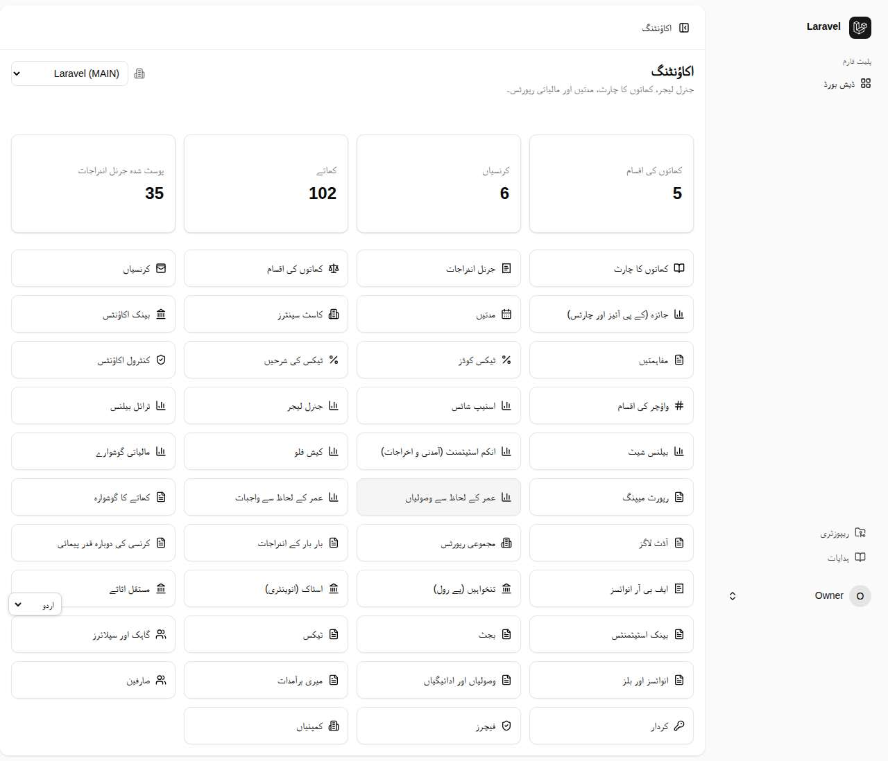
باب 1: شروعات — لاگ اِن، مینو، زبان اور رولز
← فہرست · اگلا باب: بنیادی ڈیٹا →
اس باب میں آپ سیکھیں گے کہ سسٹم میں داخل کیسے ہوں، مرکزی صفحہ (Dashboard) کیسے پڑھیں، زبان اردو/انگریزی کیسے بدلیں اور کس صارف کو کیا اختیار ملتا ہے۔
ضروری نوٹ: اسکرین شاٹس انگریزی انٹرفیس کے ہیں۔ بٹنوں اور فیلڈز کے انگریزی نام اس گائیڈ میں
اس طرحلکھے گئے ہیں تاکہ آپ انہیں اسکرین پر آسانی سے پہچان سکیں۔
1.1 لاگ اِن اور مرکزی صفحہ
- اپنے براؤزر میں سسٹم کا پتہ کھولیں، مثلاً
https://your-app.test/accounting۔ - اگر آپ لاگ اِن نہیں ہیں تو سسٹم آپ کو
Loginصفحے پر لے جائے گا۔ اپنا ای میل اور پاس ورڈ لکھیں۔ - لاگ اِن کے بعد Accounting کا مرکزی صفحہ کھلتا ہے۔ اسی کو Dashboard کہتے ہیں۔
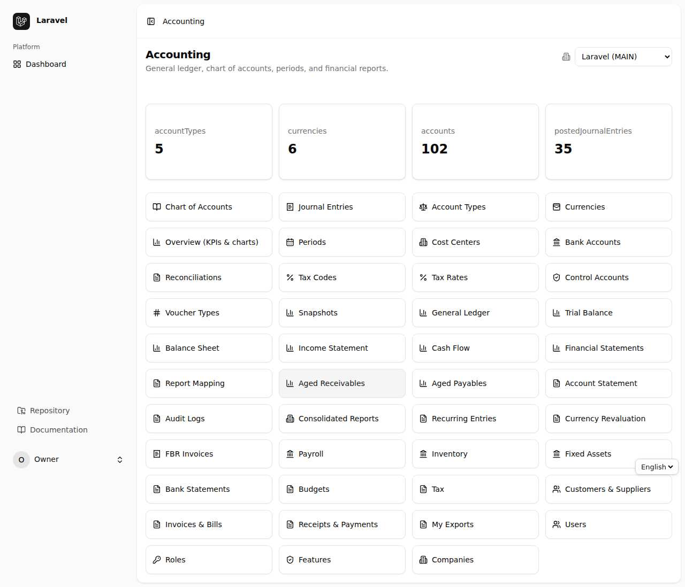
مرکزی صفحے پر ہر ماڈیول کا ایک لنک ہوتا ہے: Chart of Accounts، Journal Entries، Reports، Payroll، Inventory وغیرہ۔ آپ کو صرف وہی لنک نظر آتے ہیں جن کی اجازت (Permission) آپ کے پاس ہے اور جو Features میں آن ہیں (دیکھیں باب 10)۔
1.2 Overview — کاروبار کی ایک نظر
Overview صفحہ نقدی، وصولیاں، ادائیگیاں، آمدنی و اخراجات کے چارٹ اور انتباہات (مثلاً منظوری کے منتظر واؤچرز، بجٹ سے تجاوز) ایک جگہ دکھاتا ہے۔ کسی بھی انتباہ پر کلک کریں تو متعلقہ فہرست کھل جاتی ہے۔
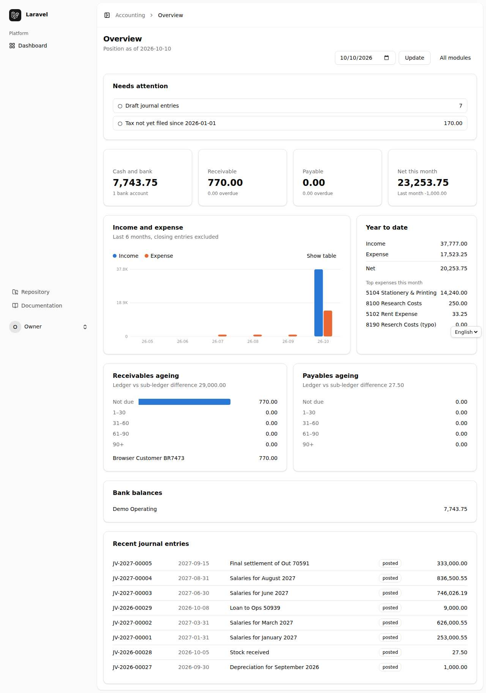
1.3 زبان: اردو (دائیں سے بائیں) اور انگریزی
صفحے کے اوپر دائیں/بائیں کونے میں English لکھا ایک زبان منتخب کرنے والا مینو ہے۔ اس میں سے اردو منتخب کریں:
- پورا صفحہ دائیں سے بائیں (RTL) ہو جاتا ہے۔
- مینو، بٹن، فارم کے لیبل اور پیغامات اردو میں آ جاتے ہیں۔
- آپ کی پسند محفوظ رہتی ہے، اگلی بار دوبارہ منتخب کرنے کی ضرورت نہیں۔
- اعداد، کوڈ، ای میل اور انگریزی ناموں (مثلاً
JV-2026-00001) کی سمت درست رہتی ہے۔
1.4 کمپنی تبدیل کرنا (Multi-company)
اگر آپ کے ادارے میں ایک سے زیادہ کمپنیاں ہیں تو مرکزی صفحے پر Company کا مینو ہوتا ہے۔ کمپنی بدلتے ہی تمام فہرستیں، رپورٹیں اور واؤچر اسی کمپنی کے ہو جاتے ہیں۔ ایک کمپنی کا ڈیٹا دوسری کمپنی کو کبھی نظر نہیں آتا۔
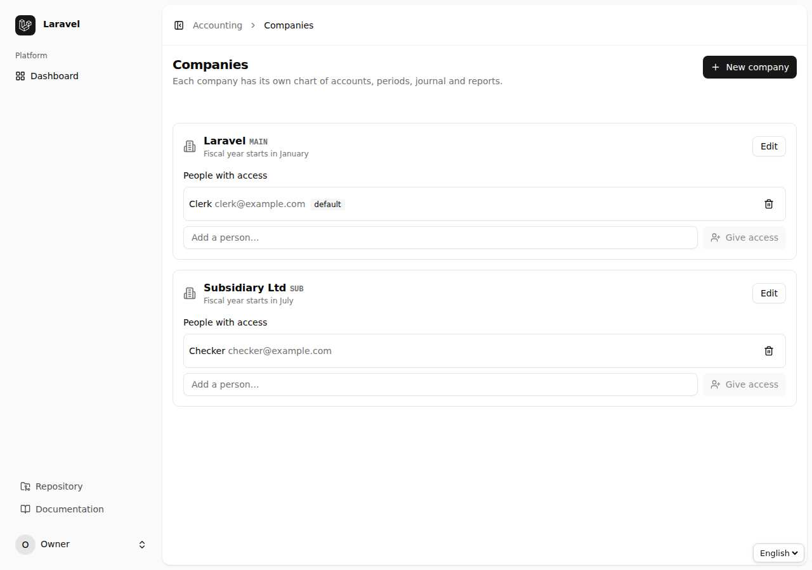
نئی کمپنی بنانے اور صارفین کو کمپنی تک رسائی دینے کے لیے Companies صفحہ استعمال کریں (صرف companies.manage کی اجازت والے صارفین)۔
1.5 رولز (Roles) — کون کیا کر سکتا ہے
سسٹم میں اختیارات کی تقسیم اس اصول پر ہے کہ ایک ہی شخص واؤچر بنا بھی نہ سکے اور خود منظور بھی نہ کر سکے۔
| رول (Role) | کیا کر سکتا ہے |
|---|---|
super-admin |
سب کچھ؛ پھر بھی اپنا بنایا ہوا واؤچر خود منظور نہیں کر سکتا |
admin |
صارفین، رولز اور اجازتیں سنبھالتا ہے؛ حسابات میں کچھ نہیں لکھتا |
accountant |
واؤچر بناتا، پوسٹ کرتا، پیرو کلوز کرتا ہے؛ پے رول تیار اور جمع (Submit) کرتا ہے |
approver |
منظور/مسترد کرتا ہے؛ پے رول منظور (Approve)، پوسٹ اور ادا کرتا ہے؛ خود واؤچر نہیں بناتا |
auditor |
سب کچھ صرف پڑھ سکتا ہے، بشمول Audit Log |
viewer |
صرف رپورٹیں اور فہرستیں دیکھ سکتا ہے |
جس عمل کی اجازت نہ ہو، اس پر سسٹم 403 Forbidden دیتا ہے اور بٹن عموماً نظر ہی نہیں آتا۔ رولز اور اجازتوں کی تفصیل باب 10 میں ہے۔
1.6 عام اصول جو ہر اسکرین پر لاگو ہیں
- Draft اور Posted: واؤچر پہلے Draft ہوتا ہے (تبدیلی ممکن)،
Postکرنے کے بعد وہ کھاتوں میں درج ہو جاتا ہے اور تبدیل نہیں ہو سکتا؛ غلطی ہو توReverse(الٹ) کیا جاتا ہے۔ - بند پیرئیڈ: بند مدت میں کوئی نیا واؤچر پوسٹ نہیں ہو سکتا۔
- فلٹر اور ترتیب: فہرستوں کے اوپر فلٹر کے خانے ہوتے ہیں؛ خانہ بھر کر
Filter/Searchدبائیں،Resetسے فلٹر ہٹائیں۔ - ایکسپورٹ: رپورٹوں اور کئی فہرستوں پر
CSV،Excel،PDFکے بٹن ہوتے ہیں۔ - آڈٹ: ہر اہم تبدیلی (کس نے، کب، کیا بدلا) Audit Log میں محفوظ ہوتی ہے۔
1.7 دو انٹرفیس: React اور Blade
یہ پیکیج دو طرح کی اسکرینیں فراہم کرتا ہے: React (Inertia) — جدید، تیز، ایک صفحے کی ایپ کی طرح؛ اور Blade/Livewire — روایتی سرور سے بننے والے صفحات (Laravel Jetstream کے ساتھ)۔ دونوں میں ہر اسکرین، ہر بٹن اور ہر قاعدہ ایک جیسا ہے؛ فرق صرف ظاہری شکل کا ہے۔ آپ کے ادارے میں کون سا انٹرفیس چل رہا ہے یہ آپ کے ڈویلپر نے ACCOUNTING_UI_DRIVER (inertia یا blade) میں طے کیا ہوتا ہے۔ اس گائیڈ کے اسکرین شاٹس React کے ہیں؛ Blade کی چند مثالیں:
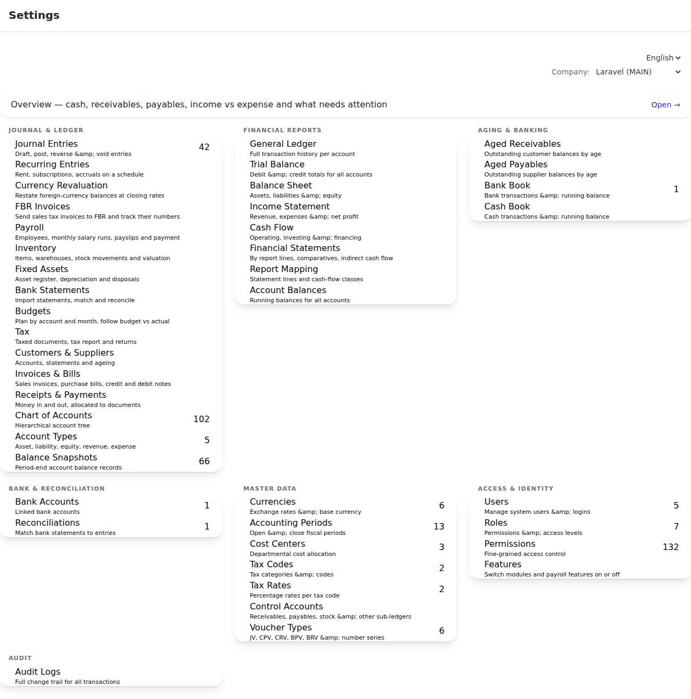
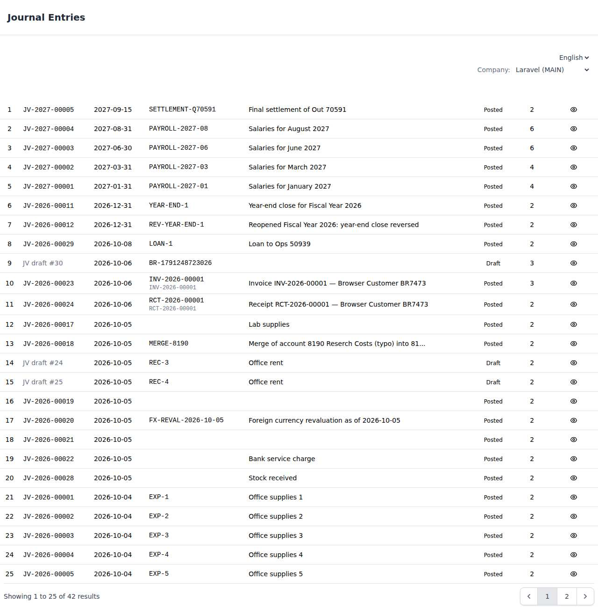
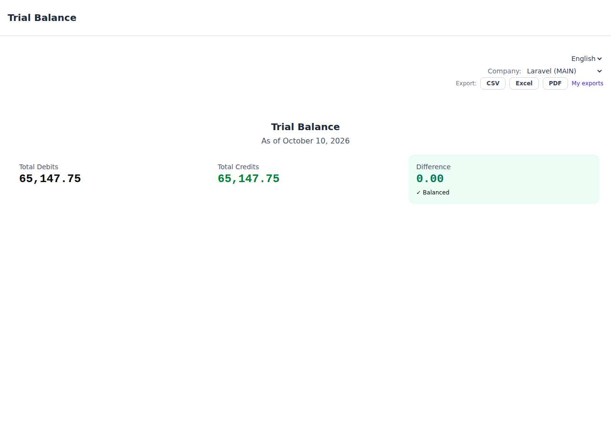
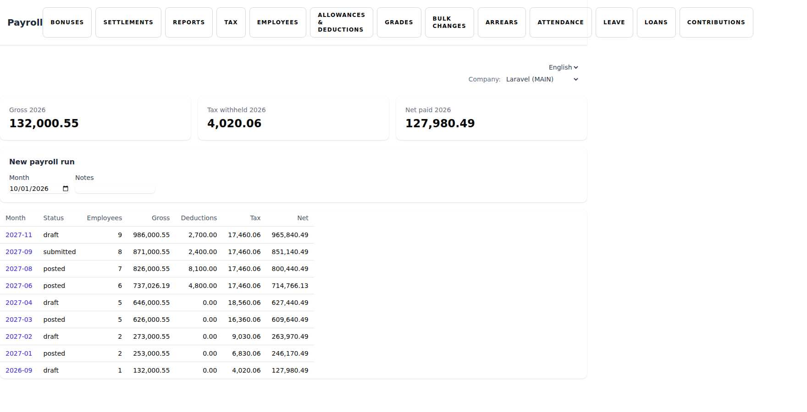
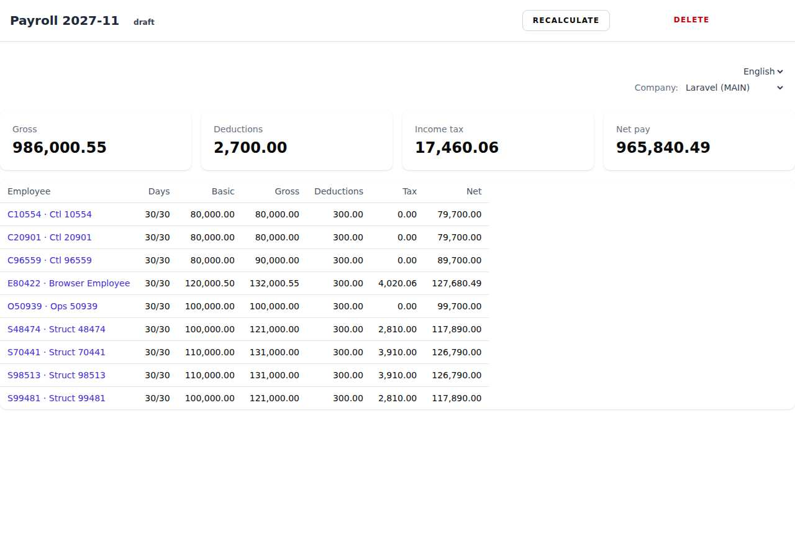
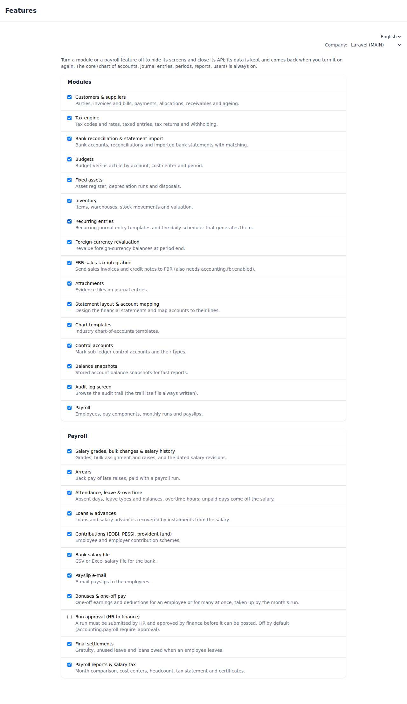
Blade میں صارفین، رولز، Permissions اور Features کے صفحات /settings/... کے تحت ہوتے ہیں (مثلاً /settings/users، /settings/roles، /settings/features)؛ باقی سب /accounting/... کے تحت۔ مکمل فہرست Help Catalog میں "Blade driver" کے کالم میں ہے۔
باب 2: بنیادی ڈیٹا — کھاتوں کا چارٹ، کرنسی، پیرئیڈ اور دیگر
← پچھلا باب · فہرست · اگلا باب: جرنل واؤچر →
کوئی بھی لین دین درج کرنے سے پہلے یہ بنیادی چیزیں طے ہونی چاہئیں۔ اس باب کی ہر اسکرین کا ایک ہی انداز ہے: فہرست (Index) ← Create ← تفصیل (Show) ← Edit۔
2.1 کھاتوں کا چارٹ (Chart of Accounts)
یہ آپ کے حسابات کی بنیاد ہے: ہر کھاتے کا ایک کوڈ (مثلاً 1101 Cash In Hand)، نام، قسم (Asset/Liability/Equity/Income/Expense) اور والدین (Parent) ہوتا ہے۔
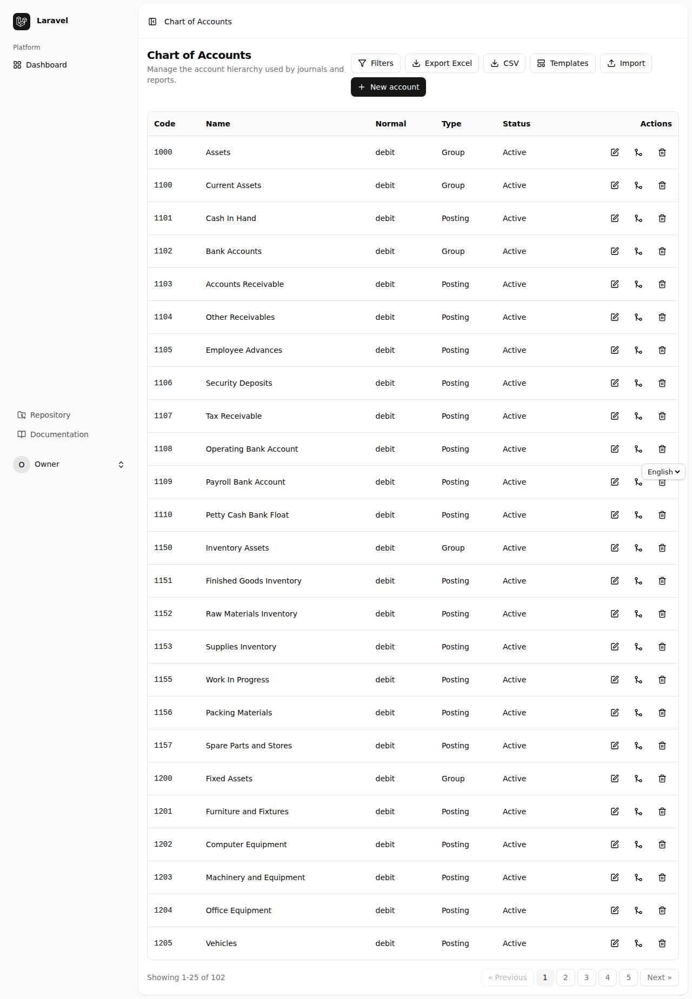
نیا کھاتہ بنانے کے مراحل
Chart of Accounts←Createدبائیں۔Account CodeاورAccount Nameلکھیں۔Account Typeمنتخب کریں (Asset، Liability وغیرہ)۔- اگر یہ کسی گروپ کے نیچے ہے تو
Parentمنتخب کریں۔ گروپ (Group) کھاتے میں براہ راست واؤچر نہیں لکھا جاتا، صرف پتّے (Leaf) کھاتوں میں۔ Saveدبائیں۔
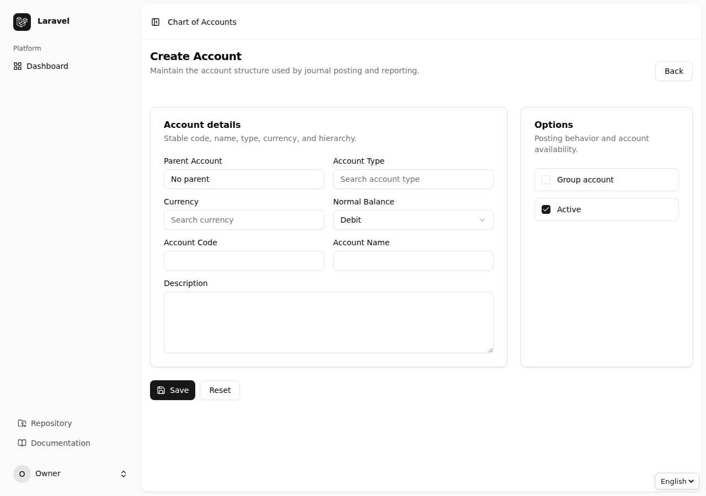
ٹری (Tree) منظر: Tree لنک سے پورا چارٹ درخت کی شکل میں کھلتا ہے، ہر شاخ کھولی/بند کی جا سکتی ہے۔
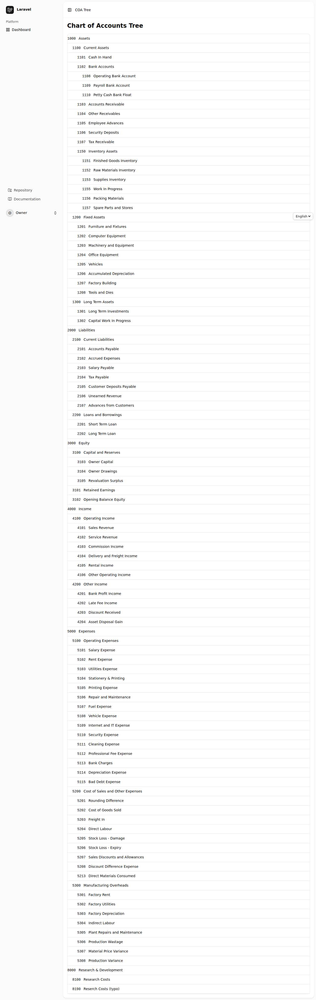
سسٹم ڈیٹا بیس کی سطح پر چارٹ کے اصول نافذ کرتا ہے: کوڈ منفرد، ہر کھاتے کی قسم لازمی، گروپ میں واؤچر ممنوع، اور جس کھاتے میں واؤچر ہو چکے ہوں اس کی قسم نہیں بدلی جا سکتی۔
چارٹ امپورٹ / ایکسپورٹ
بڑا چارٹ ہاتھ سے بنانے کے بجائے CSV یا Excel سے لوڈ کریں:
Importدبائیں، پھرTemplateسے نمونہ فائل ڈاؤن لوڈ کریں۔- فائل بھر کر اپ لوڈ کریں۔ سسٹم پہلے جانچ (Dry-run) دکھاتا ہے: کون سی قطاریں درست ہیں اور کن میں کیا غلطی ہے۔
- غلطیاں ٹھیک کر کے
Importکی توثیق کریں۔
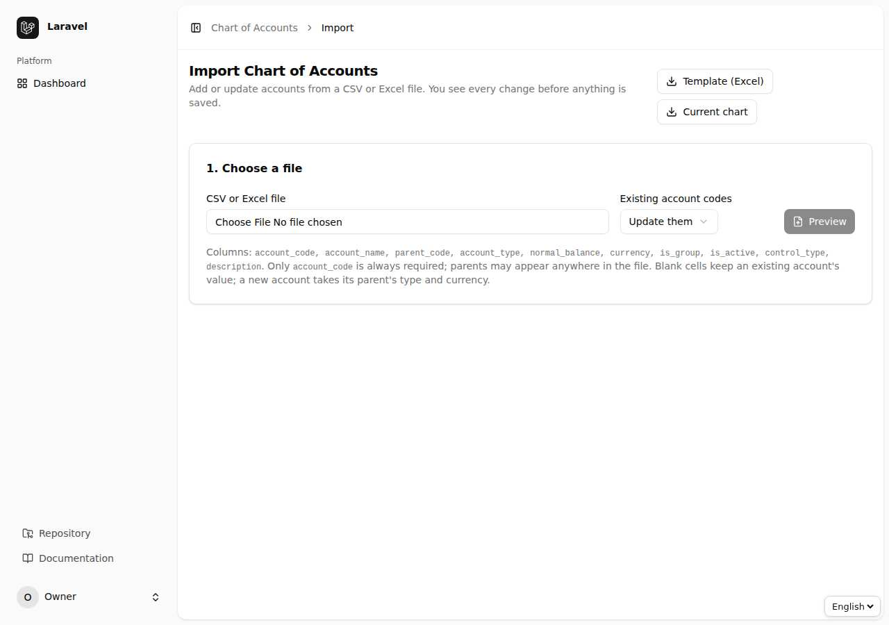
کھاتے ضم کرنا اور کوڈ بدلنا (Restructure)
کسی کھاتے کے صفحے سے Restructure کھولیں۔ یہاں آپ (1) کوڈ بدل سکتے ہیں، (2) دو ایک جیسے کھاتوں کو ضم (Merge) کر سکتے ہیں — پہلے کھاتے کے تمام واؤچر دوسرے میں منتقل ہو جاتے ہیں — اور (3) شاخ کو نئے والدین کے نیچے لے جا سکتے ہیں۔ ہر کارروائی Audit Log میں درج ہوتی ہے۔
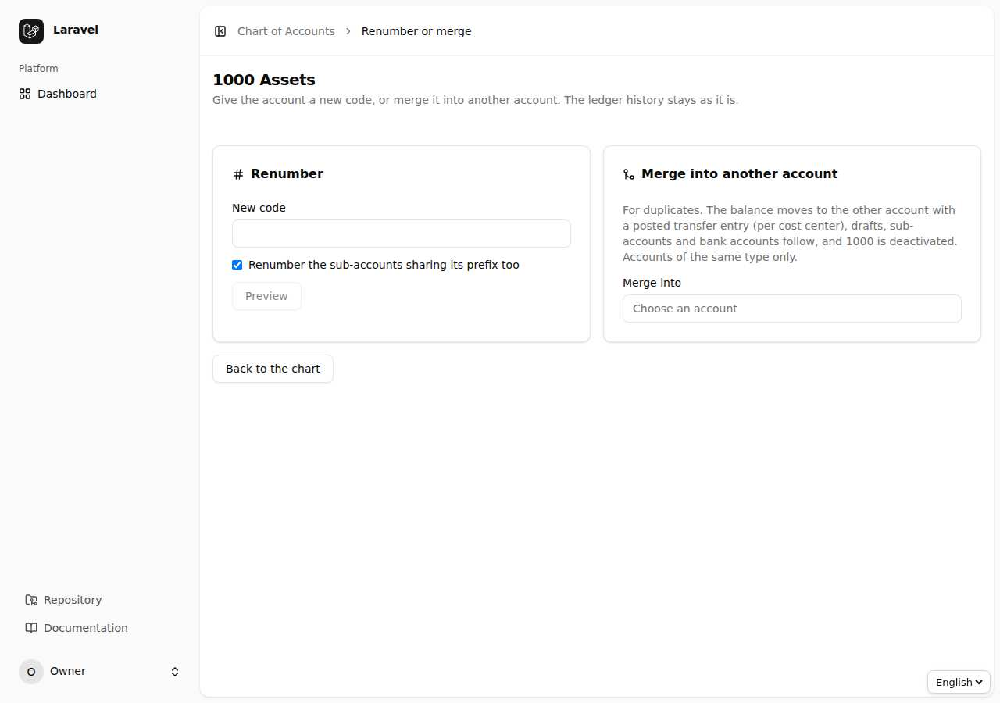
صنعتی ٹیمپلیٹس (Chart Templates)
نیا ادارہ شروع کر رہے ہوں تو Chart Templates سے اپنی صنعت کا تیار چارٹ لگا لیں: Trading، Manufacturing، Services، School، NGO، Healthcare۔
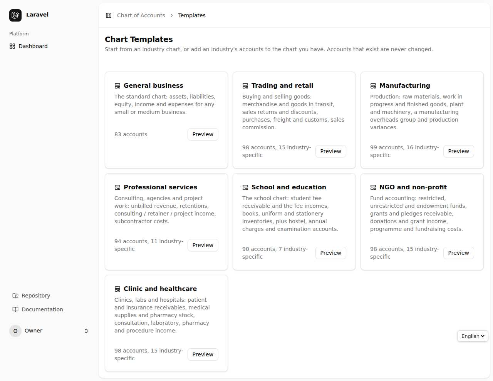
2.2 اکاؤنٹ ٹائپس (Account Types)
یہ پانچ بنیادی اقسام ہیں جن پر پورا حسابی نظام کھڑا ہے۔ عام طور پر انہیں بدلنے کی ضرورت نہیں پڑتی۔
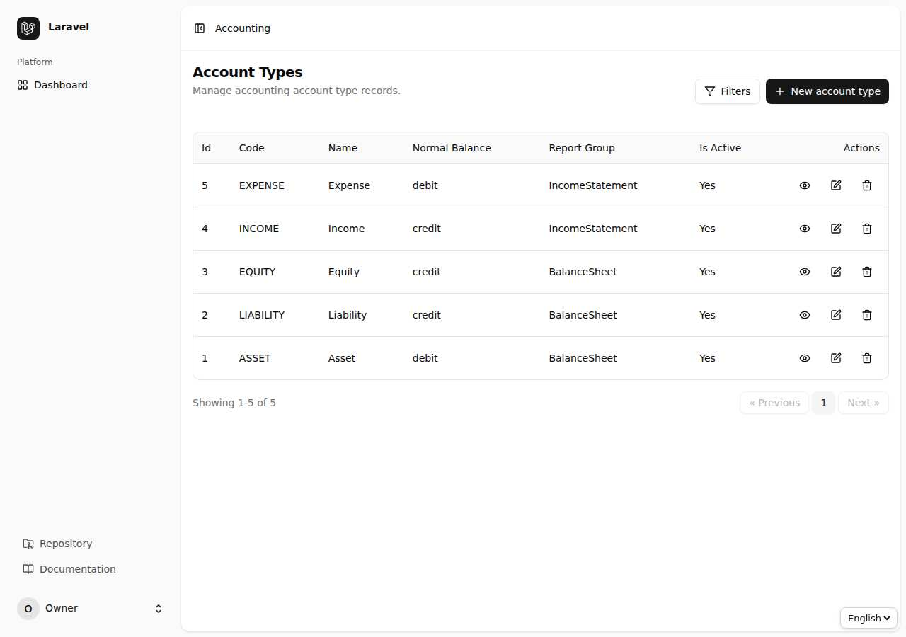
2.3 کرنسیاں اور شرحِ تبادلہ (Currencies)
ایک کرنسی بنیادی کرنسی (Base) ہوتی ہے (مثلاً PKR)؛ باقی غیر ملکی۔ ہر غیر ملکی کرنسی کی شرح (Exchange Rate) تاریخ کے ساتھ درج کی جاتی ہے۔ غیر ملکی کرنسی کا واؤچر لکھتے وقت سسٹم اس تاریخ کی شرح لگا کر بنیادی کرنسی کی رقم نکال لیتا ہے۔
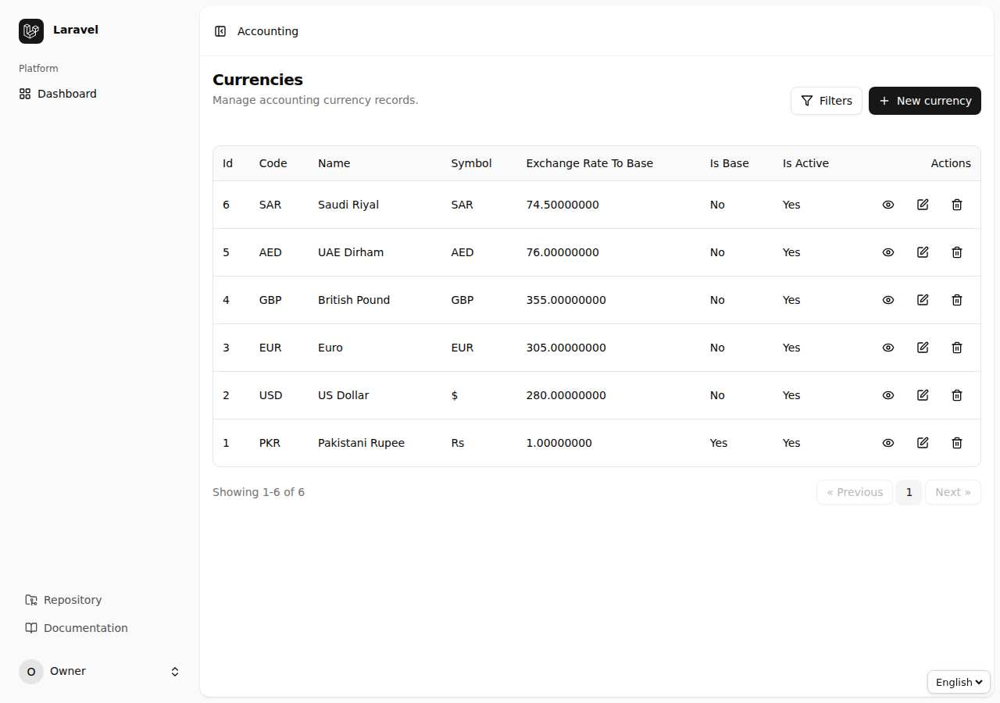
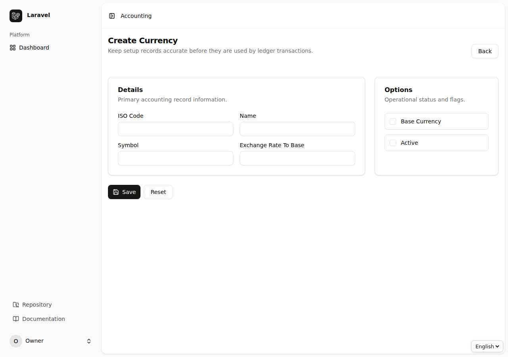
2.4 مالی مدتیں اور کلوزنگ (Periods)
ہر مالی سال کی مہینہ وار مدتیں (Periods) بنائی جاتی ہیں۔ Generate monthly سے پورے سال کی مدتیں ایک بار میں بن جاتی ہیں۔
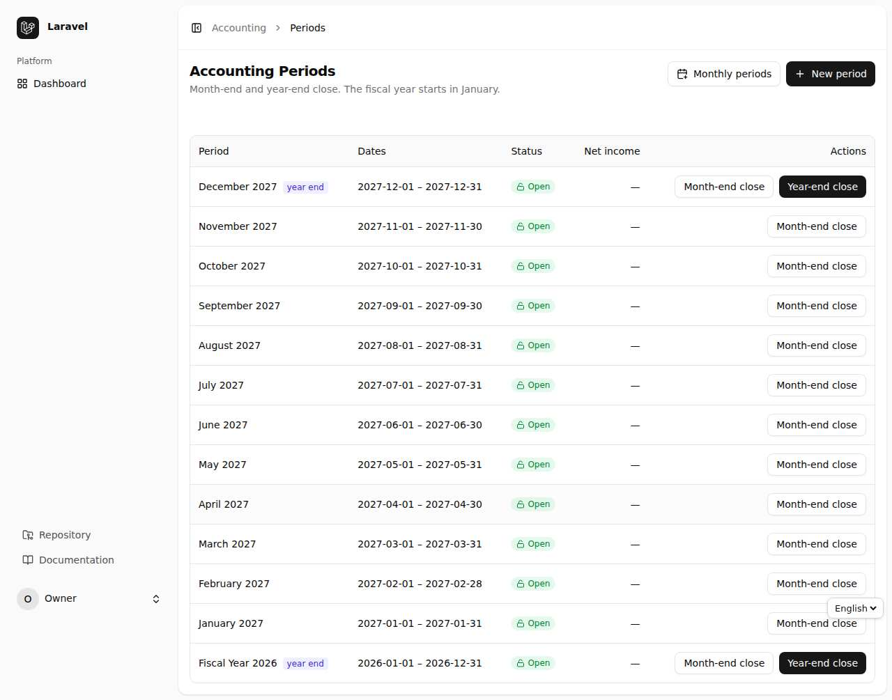
مہینے کے اختتام کی کلوزنگ: مدت کے صفحے سے Close کھولیں۔ سسٹم چیک لسٹ دکھاتا ہے (کوئی Draft واؤچر باقی تو نہیں، منظوری کے منتظر واؤچر، ٹرائل بیلنس برابر ہے یا نہیں)۔ سب ٹھیک ہو تو مدت بند ہو جاتی ہے اور اس کے اختتامی بیلنس کا اسنیپ شاٹ محفوظ ہو جاتا ہے۔ غلطی کی صورت میں مدت دوبارہ کھولی جا سکتی ہے۔
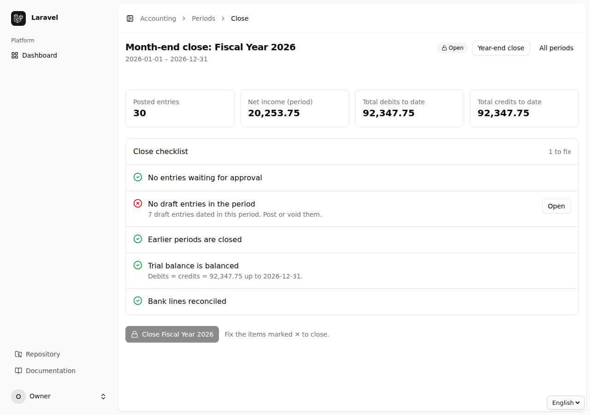
سال کے اختتام: آخری مدت بند کرنے پر سالانہ کلوزنگ ہوتی ہے: آمدنی و اخراجات صفر ہو کر منافع/نقصان Retained Earnings میں منتقل ہوتا ہے۔
2.5 لاگت کے مراکز (Cost Centers)
اخراجات و آمدنی کو شعبوں/منصوبوں کے حساب سے الگ دیکھنے کے لیے۔ واؤچر کی ہر لائن پر ایک Cost Center چنا جا سکتا ہے، اور بجٹ و پے رول رپورٹیں انہی کے حساب سے بنتی ہیں۔
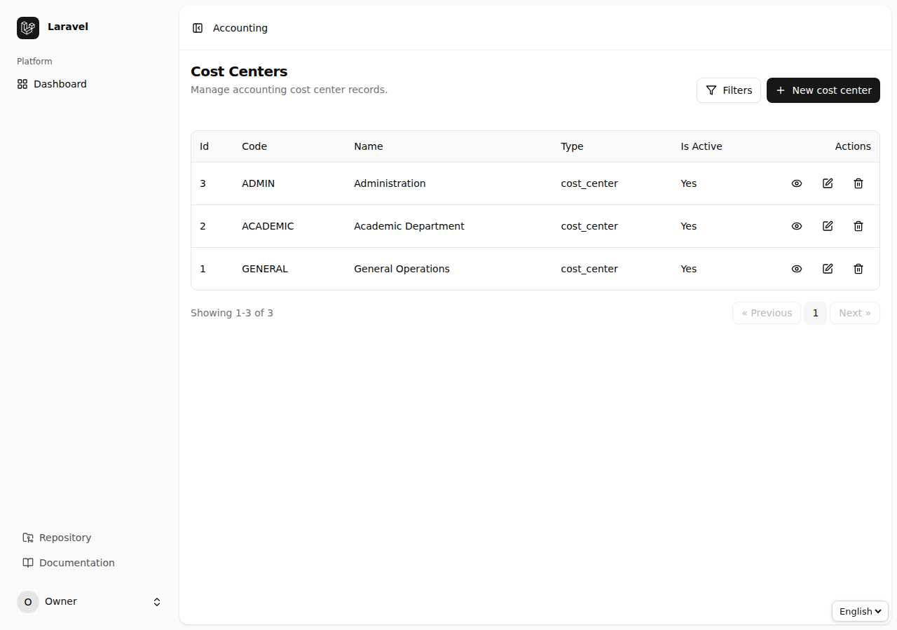
2.6 واؤچر کی اقسام اور نمبرنگ (Voucher Types)
ہر قسم (JV، Cash Payment، Bank Receipt وغیرہ) کا اپنا بلا خلا (gapless) نمبر ہوتا ہے، مثلاً JV-2026-00001۔ نمبر کی ترتیب (Prefix، سال، لمبائی، سالانہ ری سیٹ) یہاں سے طے ہوتی ہے۔ نمبر پوسٹ کرتے وقت ملتا ہے، Draft پر نہیں۔
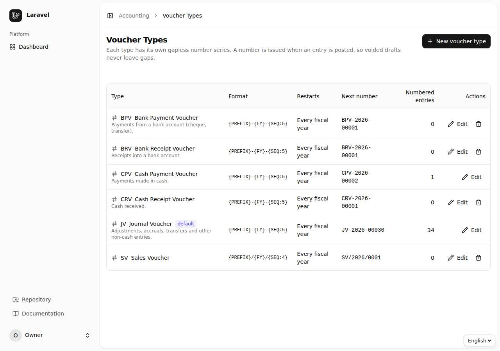
2.7 کنٹرول اکاؤنٹس (Control Accounts)
کسٹمر/سپلائر (Receivable/Payable) جیسے کھاتے کنٹرول کھاتے ہوتے ہیں: ان کی تفصیل ذیلی کھاتوں (Parties) میں ہوتی ہے۔ ان میں ہاتھ سے جرنل واؤچر لکھنا خطرناک ہے کیونکہ ذیلی کھاتہ اور کنٹرول کھاتہ ہم آہنگ نہیں رہتے۔ اس صفحے پر آپ سفارش کردہ کنٹرول کھاتے نشان زد کرتے ہیں اور دیکھتے ہیں کہ کن میں ہاتھ سے پوسٹنگ ہوئی۔
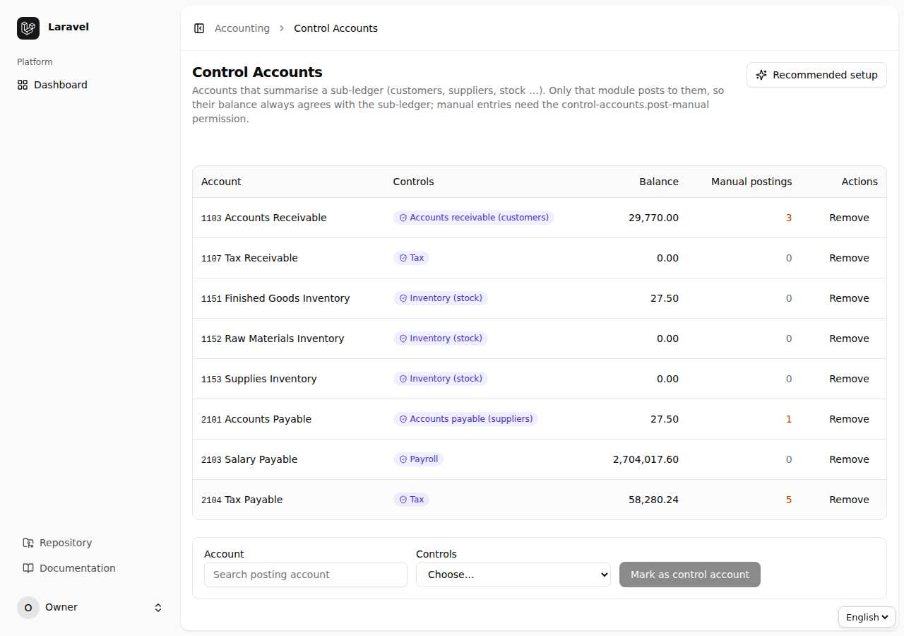
2.8 بیلنس اسنیپ شاٹس
ہر مدت بند ہونے پر ہر کھاتے کا اختتامی بیلنس محفوظ ہوتا ہے تاکہ بڑی رپورٹیں تیز چلیں۔
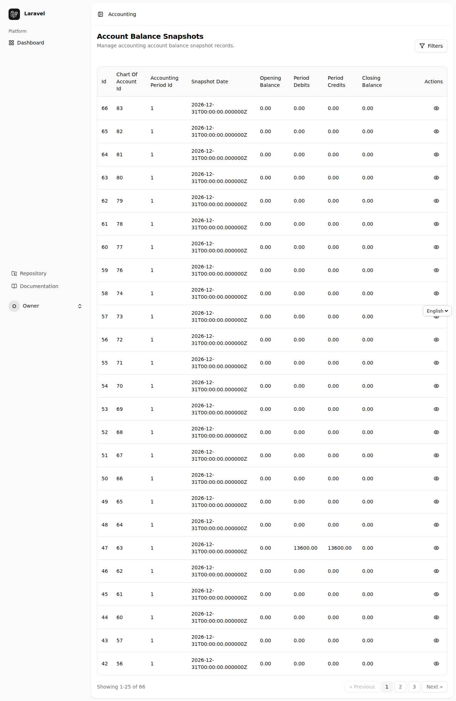
2.9 ہر ماسٹر ڈیٹا کی عمومی اسکرینیں
Account Types، Currencies، Periods، Cost Centers، Bank Accounts، Tax Codes، Tax Rates — سب میں یہی چار اسکرینیں ہوتی ہیں: فہرست، نیا، تفصیل، ترمیم۔ مثال کے طور پر Cost Center:
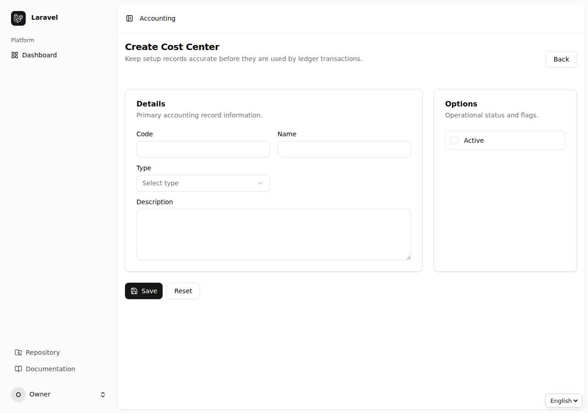
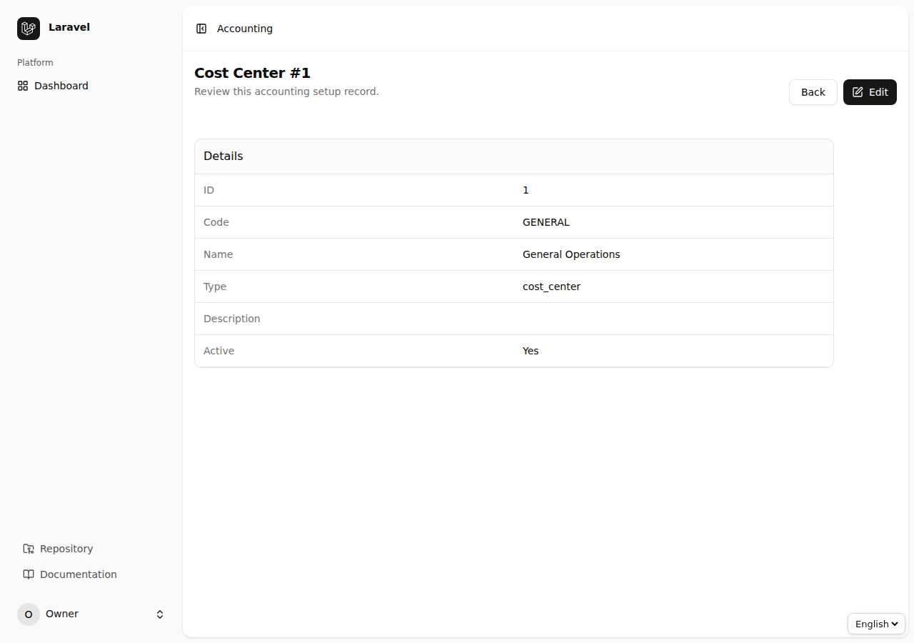
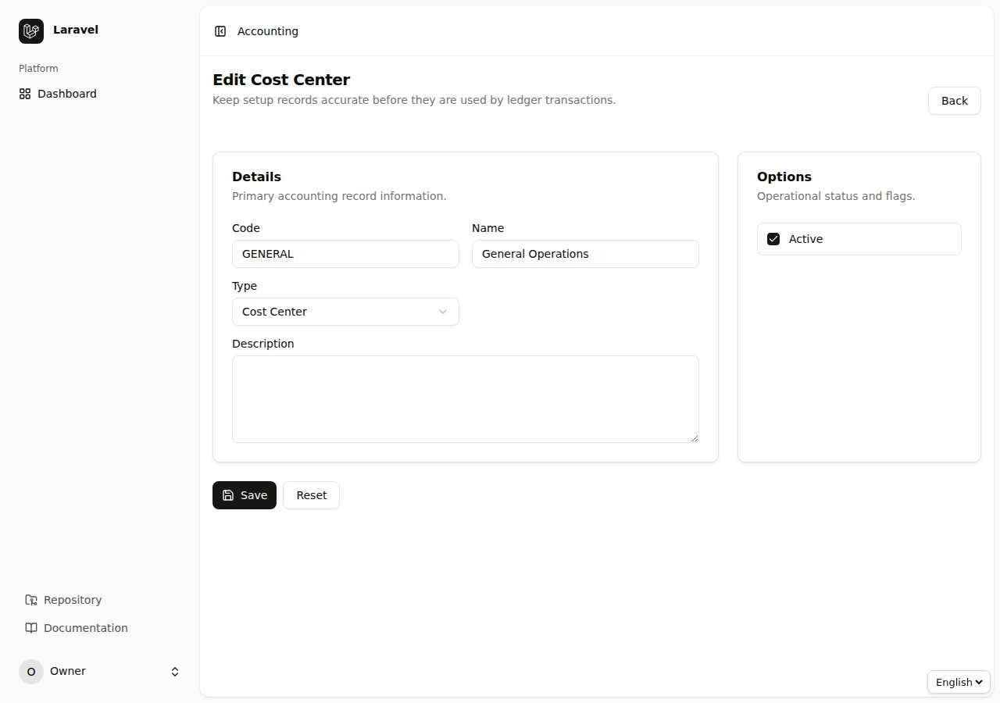
باب 3: جرنل واؤچر — بنانا، پوسٹ کرنا، منظوری اور پرنٹ
← پچھلا باب · فہرست · اگلا باب: رپورٹیں →
ہر لین دین دو طرفہ اندراج (Double entry) ہے: کل Debit = کل Credit۔ اگر دونوں برابر نہ ہوں تو سسٹم واؤچر محفوظ ہی نہیں کرتا۔
3.1 واؤچروں کی فہرست
Journal Entries میں تمام واؤچر ہیں۔ اوپر فلٹر سے آپ حیثیت (Draft/Posted/Void)، منظوری کی حیثیت، واؤچر نمبر، تاریخ، قسم اور ماخذ دستاویز (Source document) کے حساب سے تلاش کر سکتے ہیں۔
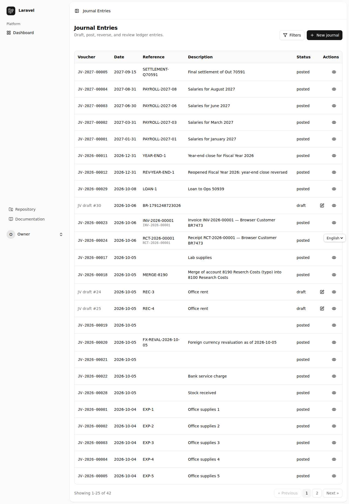
3.2 نیا واؤچر بنانا
Journal Entries←New/Create۔- Journal header میں
Voucher type، تاریخ،Referenceاور وضاحت لکھیں۔ غیر ملکی کرنسی ہو توCurrencyچنیں۔ - Lines میں ہر لائن کے لیے
Account،DebitیاCredit، اختیاریCost CenterاورDescriptionلکھیں۔ کم از کم دو لائنیں چاہئیں۔ - نیچے کل Debit اور کل Credit نظر آتے ہیں۔ فرق صفر ہونا چاہیے۔
Saveدبائیں — واؤچر Draft بن جاتا ہے۔
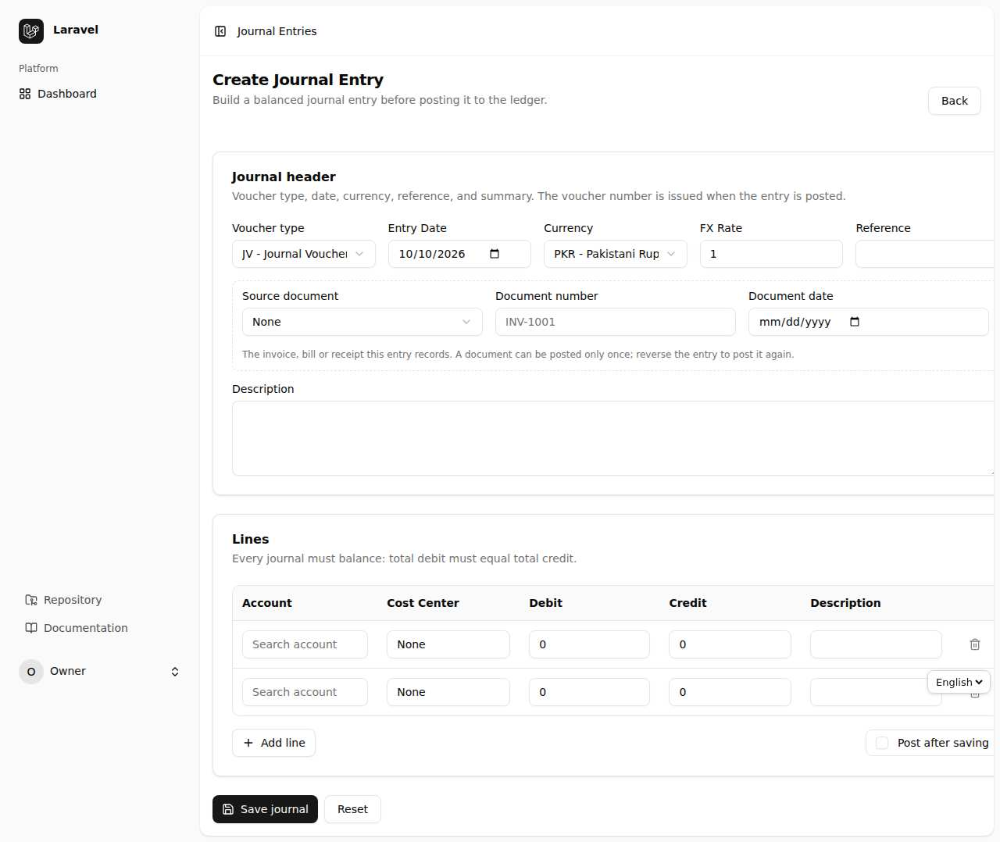
Source document: اگر یہ واؤچر کسی بل/رسید سے متعلق ہے تو اس کی قسم اور نمبر لکھیں۔ ایک ہی دستاویز کا دوسرا واؤچر بن ہی نہیں سکتا — اس طرح دوہری اندراج رک جاتی ہے۔
3.3 واؤچر کی تفصیل اور کارروائیاں
واؤچر کھولیں تو سب لائنیں، رقوم، نمبر، دستاویزات اور ہسٹری نظر آتی ہے۔ اوپر کے بٹن حیثیت کے مطابق بدلتے ہیں:
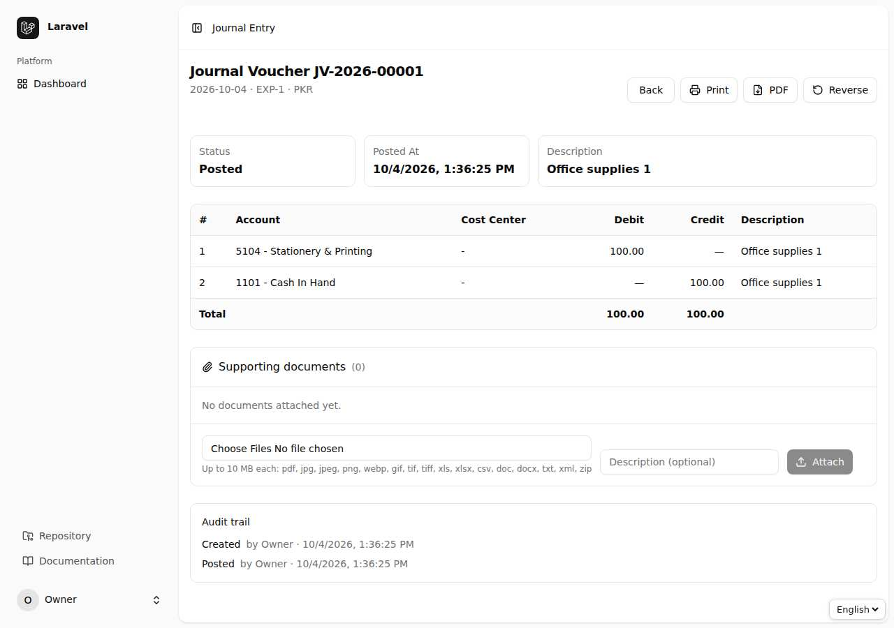
| بٹن | کب نظر آتا ہے | نتیجہ |
|---|---|---|
Edit |
صرف Draft | لائنیں بدلنا |
Post |
Draft، اور مدت کھلی ہو | کھاتوں میں درج، واؤچر نمبر ملتا ہے |
Submit for approval |
منظوری کا نظام آن ہو اور رقم حد سے زیادہ ہو | منظوری کے لیے بھیجنا |
Approve & post |
صرف approver، اور اس نے خود نہ بنایا ہو | منظور کر کے پوسٹ |
Reject |
approver | وجہ لکھ کر واپس |
Reverse |
Posted | الٹا واؤچر بن کر اثر ختم |
Void |
صرف Draft | منسوخ |
Posted واؤچر کبھی ایڈٹ یا ڈیلیٹ نہیں ہوتا۔ غلطی ہو تو Reverse کریں اور درست واؤچر نیا بنائیں؛ پورا ریکارڈ آڈٹ کے لیے محفوظ رہتا ہے۔
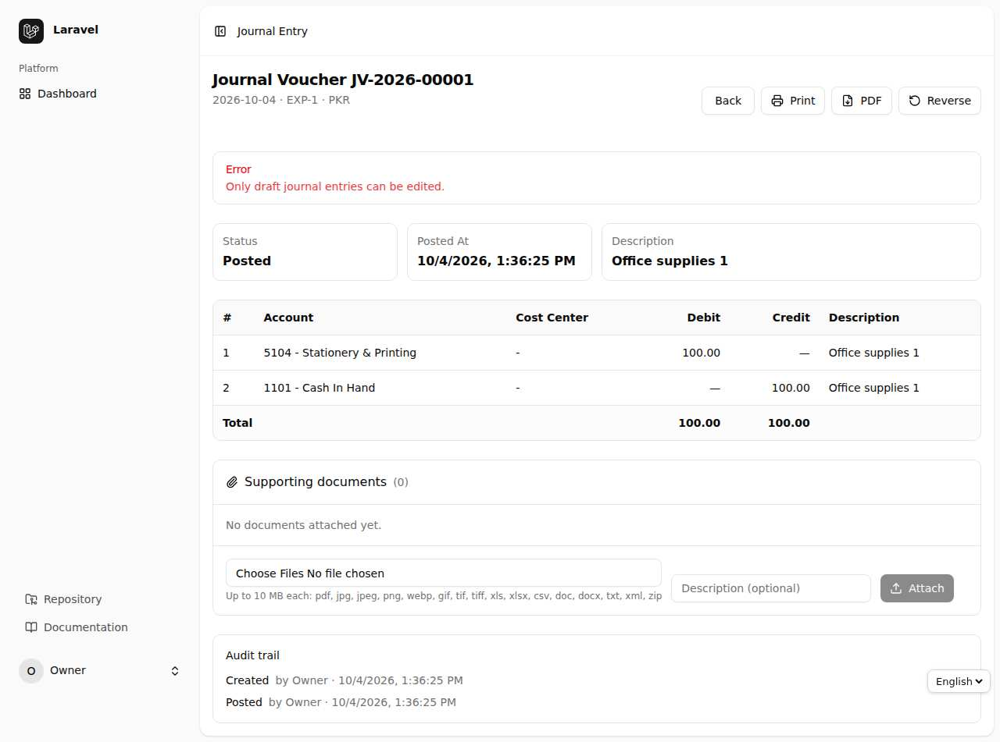
3.4 منظوری کا نظام (Maker–Checker)
یہ ادارے کی پالیسی ہے، جو ترتیب (config) میں آن/آف ہوتی ہے (ACCOUNTING_APPROVALS_ENABLED)۔ آن ہو تو مقررہ رقم سے اوپر کے واؤچر براہ راست پوسٹ نہیں ہوتے:
- Accountant
Submit for approvalدبائے۔ واؤچر پر Awaiting approval لکھا آتا ہے۔ - Approver کی فہرست میں اسے
approval_status = pendingفلٹر سے دیکھا جا سکتا ہے۔ - Approver
Approve & postیا وجہ لکھ کرRejectکرتا ہے۔ - اصول: جس نے واؤچر بنایا وہ خود اسے منظور نہیں کر سکتا۔
3.5 دستاویزات منسلک کرنا (Attachments)
Draft واؤچر کے صفحے پر Attachments کا خانہ ہے۔ بل، رسید یا معاہدے کی PDF/تصویر Upload کریں۔ فائل کی قسم اور سائز کی جانچ ہوتی ہے۔ دستاویز ڈاؤن لوڈ کی جا سکتی ہے؛ صرف Draft کی دستاویز ہٹائی جا سکتی ہے۔
3.6 واؤچر پرنٹ اور PDF
واؤچر کے صفحے سے Print (پرنٹ کے قابل صفحہ) یا PDF منتخب کریں۔ پرنٹ میں کمپنی کا نام، واؤچر نمبر، لائنیں، رقم الفاظ میں، اور تیار کنندہ/منظور کنندہ کے دستخط کی جگہ ہوتی ہے۔ PDF کے لیے dompdf پیکیج انسٹال ہونا چاہیے۔
3.7 دہرائے جانے والے واؤچر (Recurring Entries)
کرایہ، تنخواہ کی پیشگی، انشورنس جیسے مسلسل واؤچر کے لیے Recurring Entries میں ٹیمپلیٹ بنائیں: تکرار (روزانہ/ہفتہ وار/ماہانہ/سالانہ)، آغاز اور اختتامی تاریخ یا تعداد، اور موڈ — واؤچر Draft بنے (آپ خود دیکھ کر پوسٹ کریں) یا خود بخود پوسٹ ہو جائے۔ سسٹم روزانہ شیڈولر کے ذریعے مقررہ واؤچر بنا دیتا ہے۔ جو واؤچر پوسٹ نہ ہو سکا (مثلاً مدت بند تھی) وہ وجہ کے ساتھ Draft میں رہ جاتا ہے۔
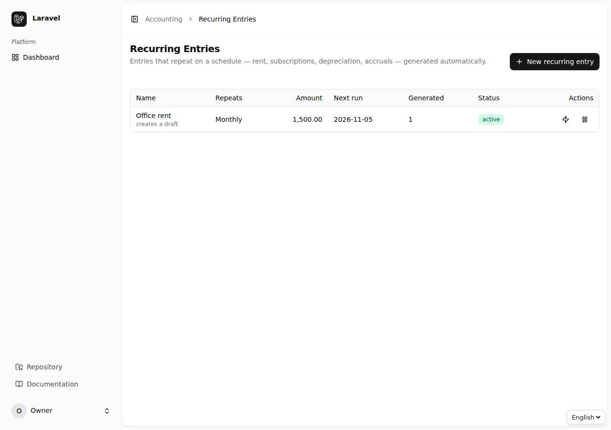
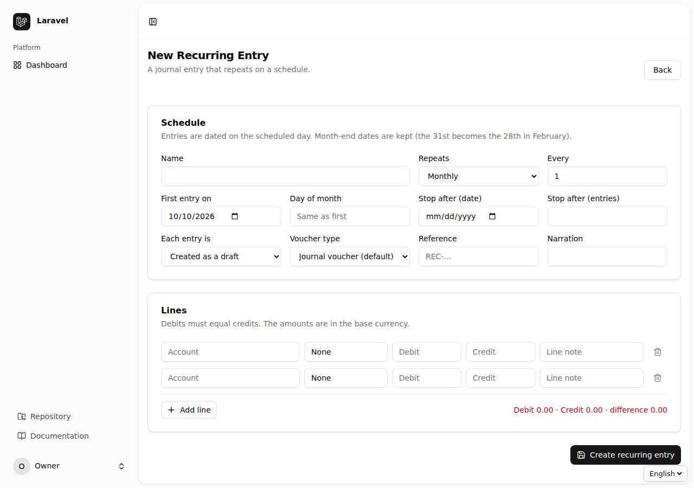
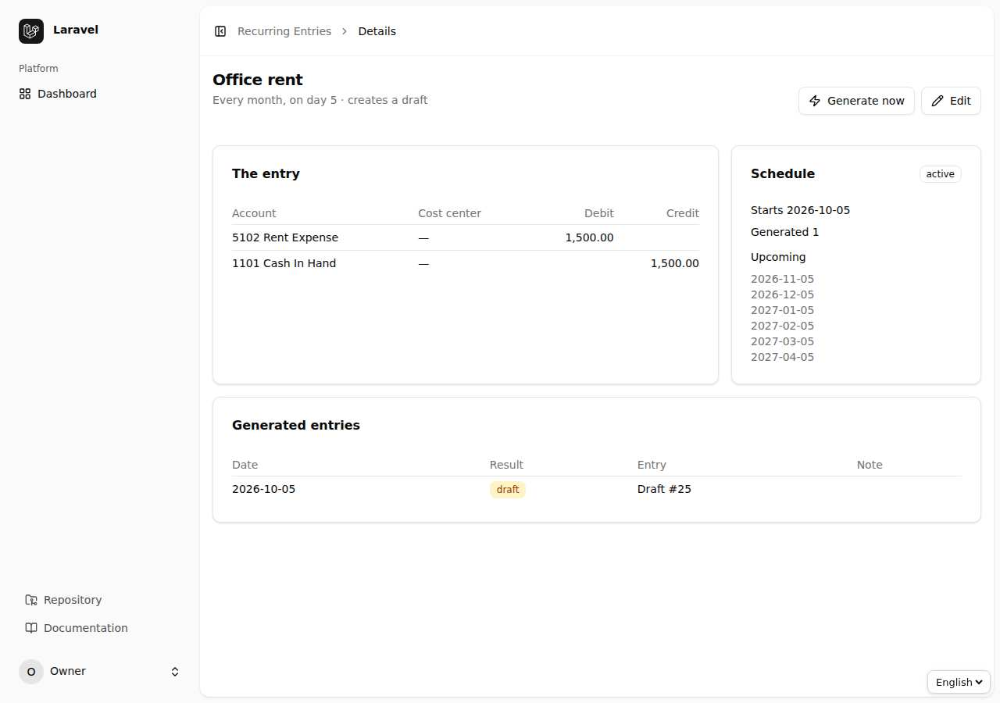
شیڈولر چلانے کے لیے سرور پر
php artisan schedule:runہر منٹ چلنا چاہیے، یا ہاتھ سےphp artisan accounting:run-recurring۔ اگرRecurring entriesفیچر بند ہو (باب 10) تو یہ کمانڈ کچھ نہیں کرتی۔
3.8 غیر ملکی کرنسی کی از سر نو قدر (FX Revaluation)
غیر ملکی کرنسی میں وصولیاں، ادائیگیاں اور بینک بیلنس مدت کے اختتام پر اختتامی شرح پر دوبارہ ناپے جاتے ہیں؛ فرق غیر حقیقی تبادلہ نفع/نقصان کے طور پر درج ہوتا ہے:
Currency Revaluationکھولیں،As ofتاریخ اور ہر کرنسی کی اختتامی شرح لکھیں۔Previewسے ہر کھاتے کا فرق دیکھیں۔Postسے واؤچر بنتا ہے؛ اگلی مدت کی پہلی تاریخ پر اس کا الٹ خود بخود بن سکتا ہے (Reversal)۔

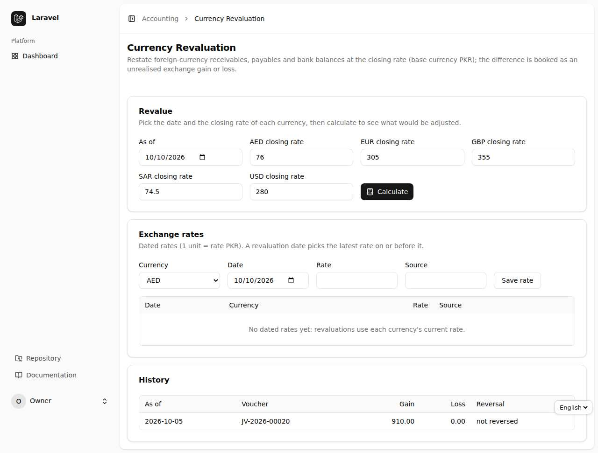
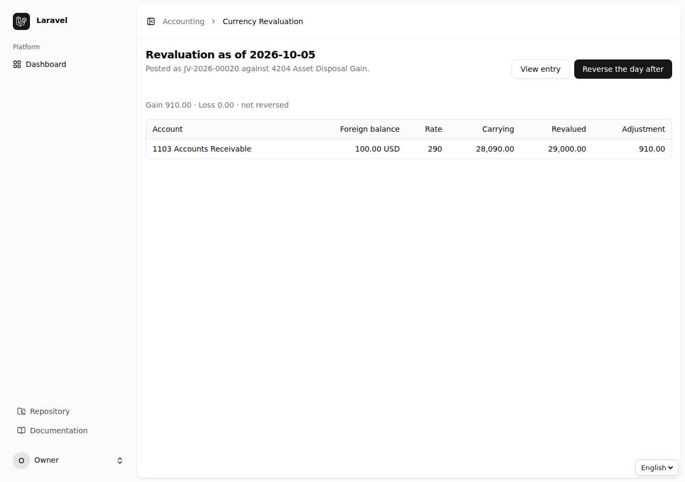
باب 4: رپورٹیں اور ایکسپورٹ
← پچھلا باب · فہرست · اگلا باب: بینک →
تمام رپورٹیں صرف Posted واؤچروں سے بنتی ہیں؛ Draft اور Void شامل نہیں ہوتے۔ ہر رپورٹ کے اوپر تاریخ/کھاتے/Cost Center کے فلٹر ہوتے ہیں، اور نیچے CSV، Excel، PDF ایکسپورٹ۔ بڑی ایکسپورٹ پس منظر (background) میں تیار ہو کر My exports میں آ جاتی ہے۔
4.1 ٹرائل بیلنس (Trial Balance)
ہر کھاتے کا ابتدائی بیلنس، مدت کی حرکت اور اختتامی بیلنس۔ کل Debit = کل Credit ہونا چاہیے؛ نہ ہو تو کہیں سنگین مسئلہ ہے۔
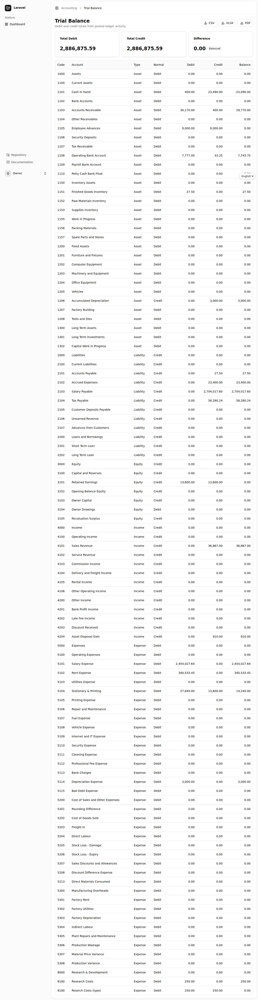
4.2 جنرل لیجر (General Ledger)
کسی کھاتے/تاریخ کی حد کی ایک ایک اندراج، چلتے بیلنس کے ساتھ۔ صفحہ بندی (pagination) ہے اور کل رقوم پورے فلٹر کی ہوتی ہیں، صرف موجودہ صفحے کی نہیں۔
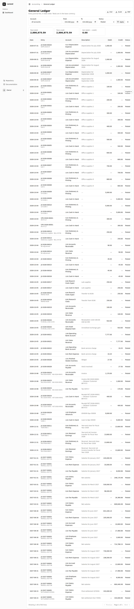
4.3 اکاؤنٹ اسٹیٹمنٹ (Account Statement)
ایک کھاتے کا بینک اسٹیٹمنٹ جیسا گوشوارہ: ابتدائی بیلنس، ہر اندراج پر چلتا بیلنس، اختتامی بیلنس۔ پہلے Account منتخب کریں، تب ہی ڈیٹا لوڈ ہوتا ہے۔
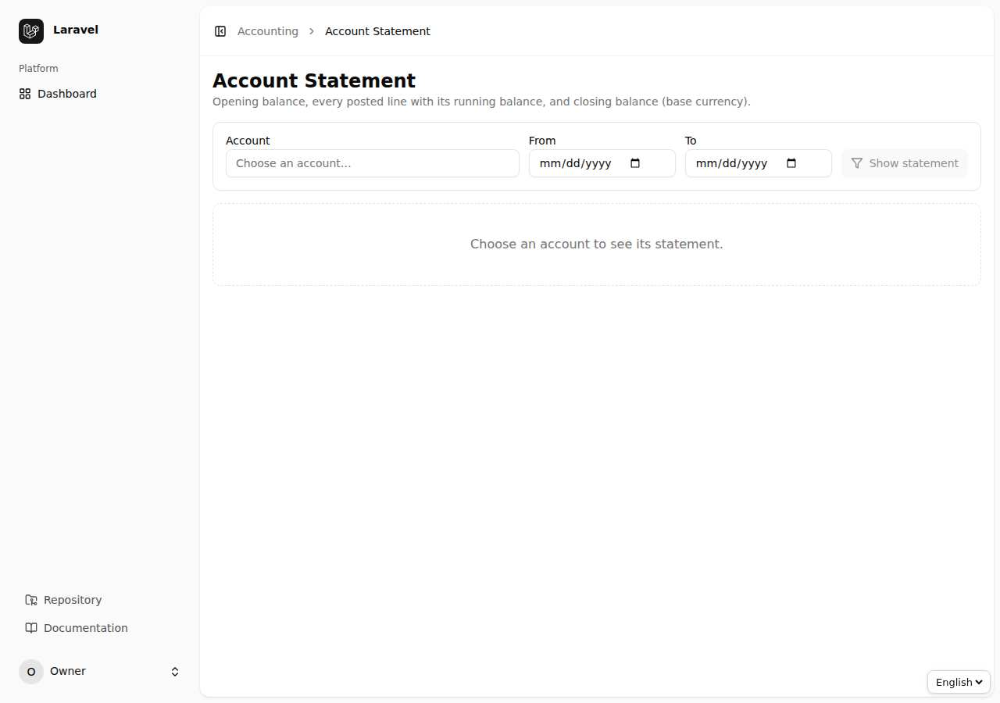
4.4 بیلنس شیٹ (Balance Sheet)
کسی تاریخ تک اثاثے، واجبات اور ملکیت۔ سال کے اختتام سے پہلے بھی یہ متوازن رہتی ہے کیونکہ جاری سال کا منافع Unclosed earnings کے طور پر ملکیت میں آتا ہے۔
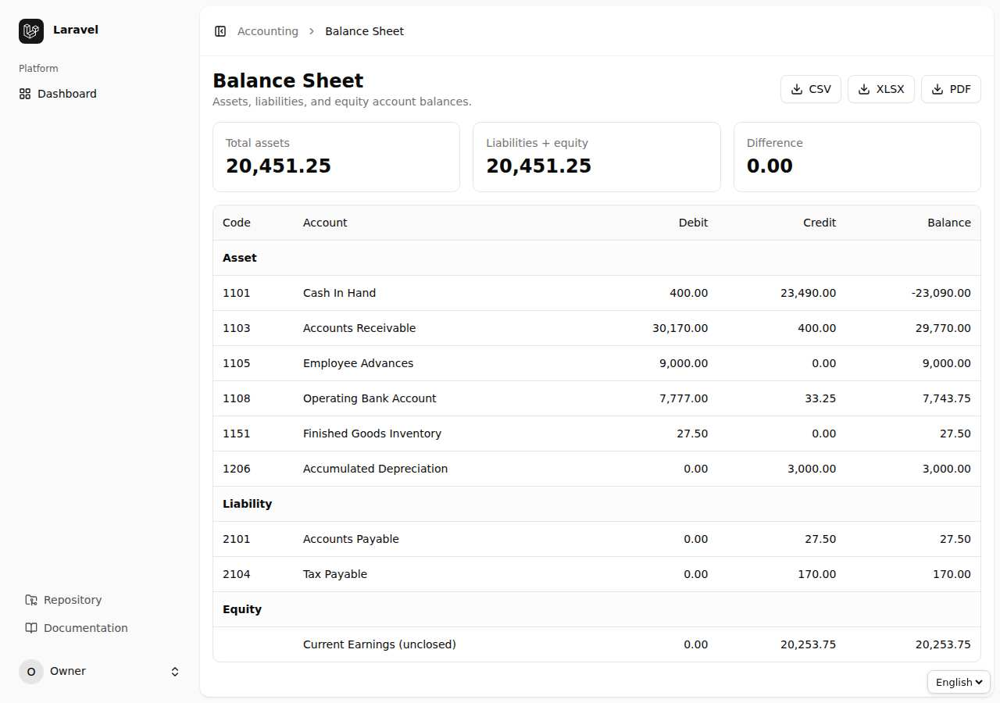
4.5 آمدنی کا گوشوارہ (Income Statement)
مدت کی آمدنی، اخراجات اور خالص منافع/نقصان۔
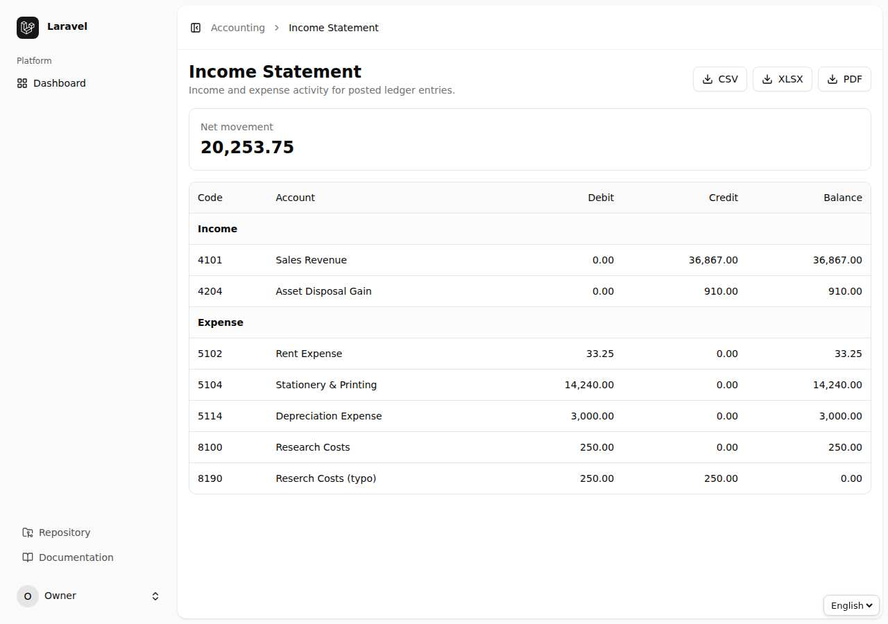
4.6 نقدی کا بہاؤ (Cash Flow)
مدت میں نقدی کہاں سے آئی اور کہاں گئی: آپریٹنگ، سرمایہ کاری اور مالیاتی سرگرمیاں۔ بالواسطہ (Indirect) طریقے کی لائنیں Report Mapping میں اپنی مرضی سے بنائی جا سکتی ہیں۔
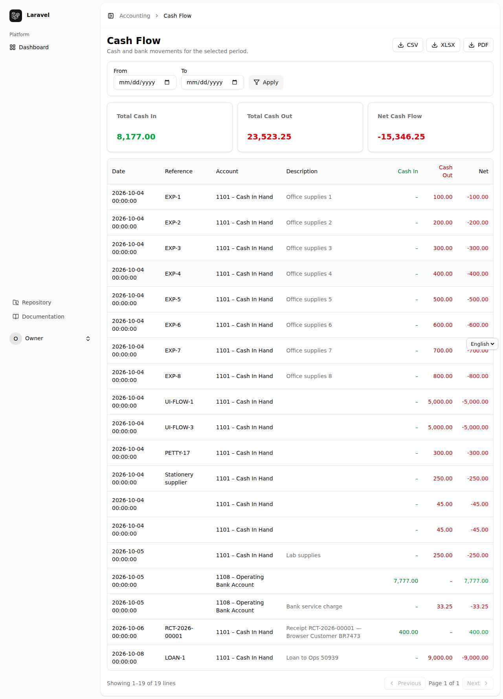
4.7 بینک بُک اور کیش بُک
نقدی/بینک کھاتوں کی روزانہ حرکت۔ ذیلی بینک کھاتے خود شامل ہو جاتے ہیں۔
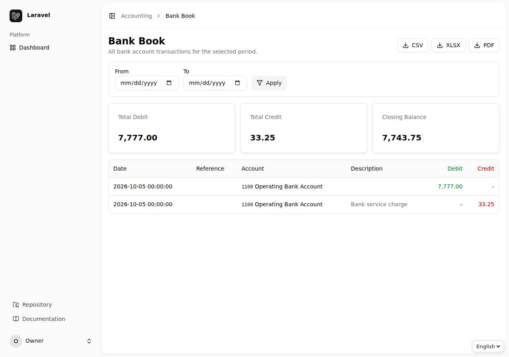
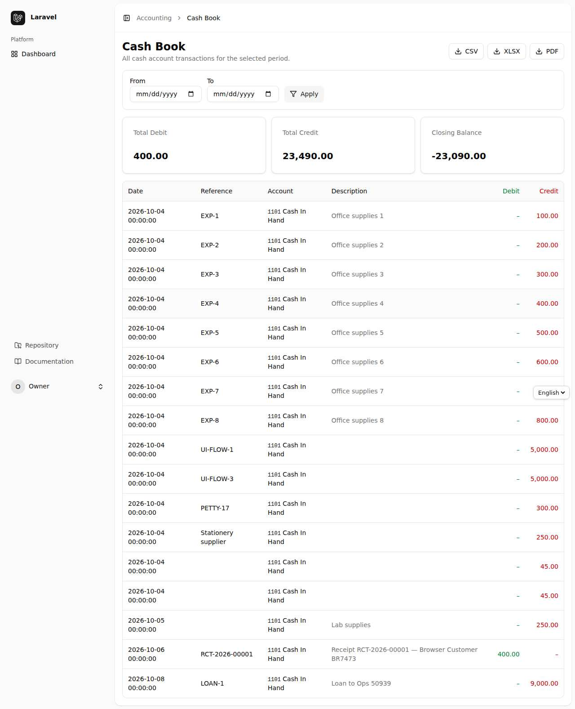
4.8 وصولیوں/ادائیگیوں کی عمر (Aged Receivables / Payables)
کون سا گاہک/سپلائر کتنے دن سے رقم روکے بیٹھا ہے: Current، 1–30، 31–60، 61–90، 90+ دن کے خانے، جن کا مجموعہ کل بقایا کے برابر ہوتا ہے۔
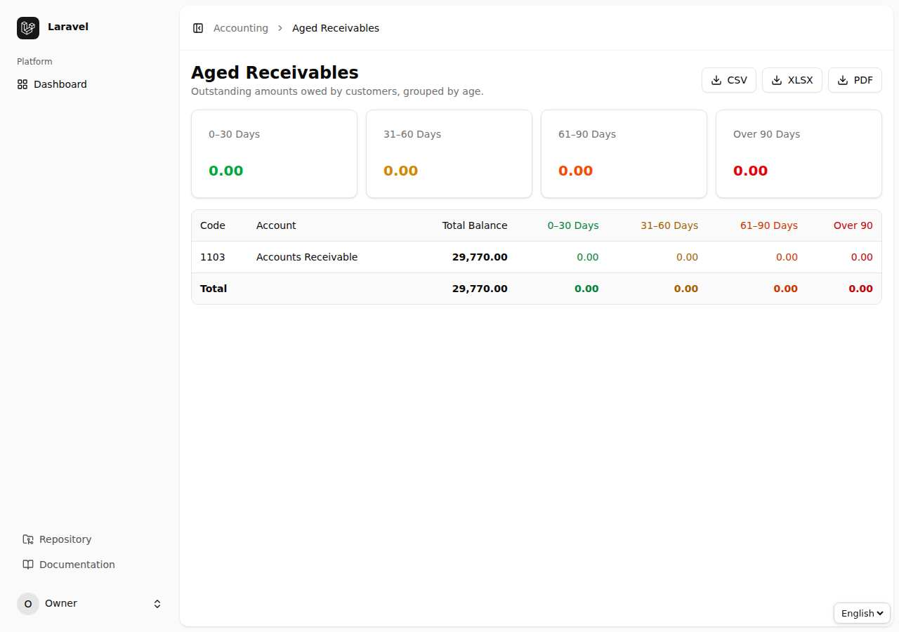
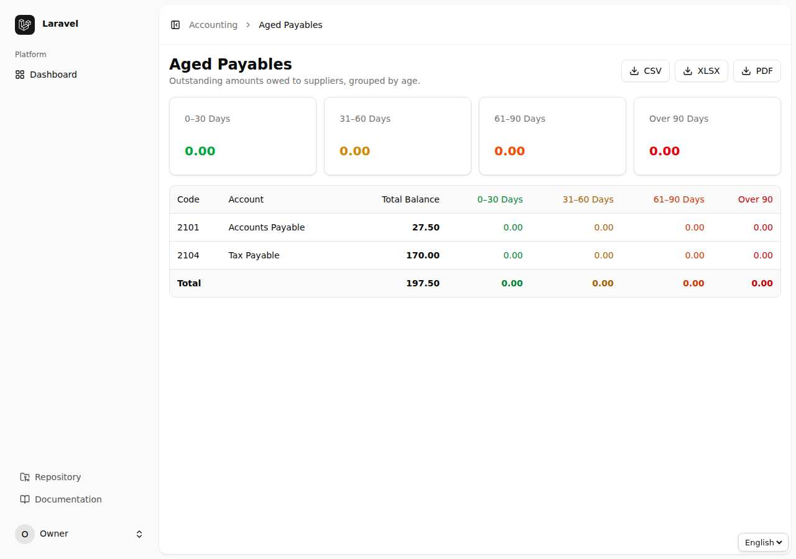
4.9 مالیاتی گوشوارے اور رپورٹ میپنگ
Financial Statements میں گوشواروں کی ترتیب (مثلاً "Current Assets" کے ذیل میں کون سے کھاتے) آپ کی مرضی کے مطابق بنتی ہے۔ ترتیب Report Mapping میں طے ہوتی ہے: ہر کھاتے کو ایک لائن سے جوڑیں؛ اور Cash Flow کی لائنیں بھی یہیں بنتی ہیں۔
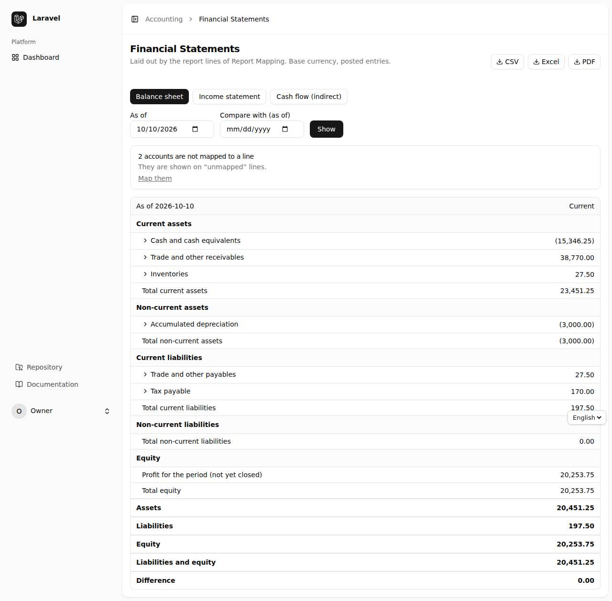
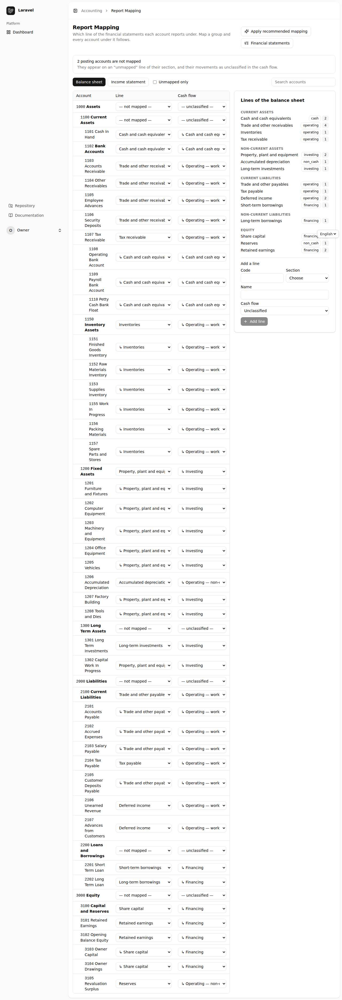
4.10 مجموعی رپورٹ (Consolidated)
اگر ایک سے زیادہ کمپنیاں ہوں تو Consolidated Reports میں ٹرائل بیلنس وغیرہ سب کمپنیوں کا مجموعہ نکلتا ہے (صرف ان کمپنیوں کا جن تک آپ کی رسائی ہے)۔
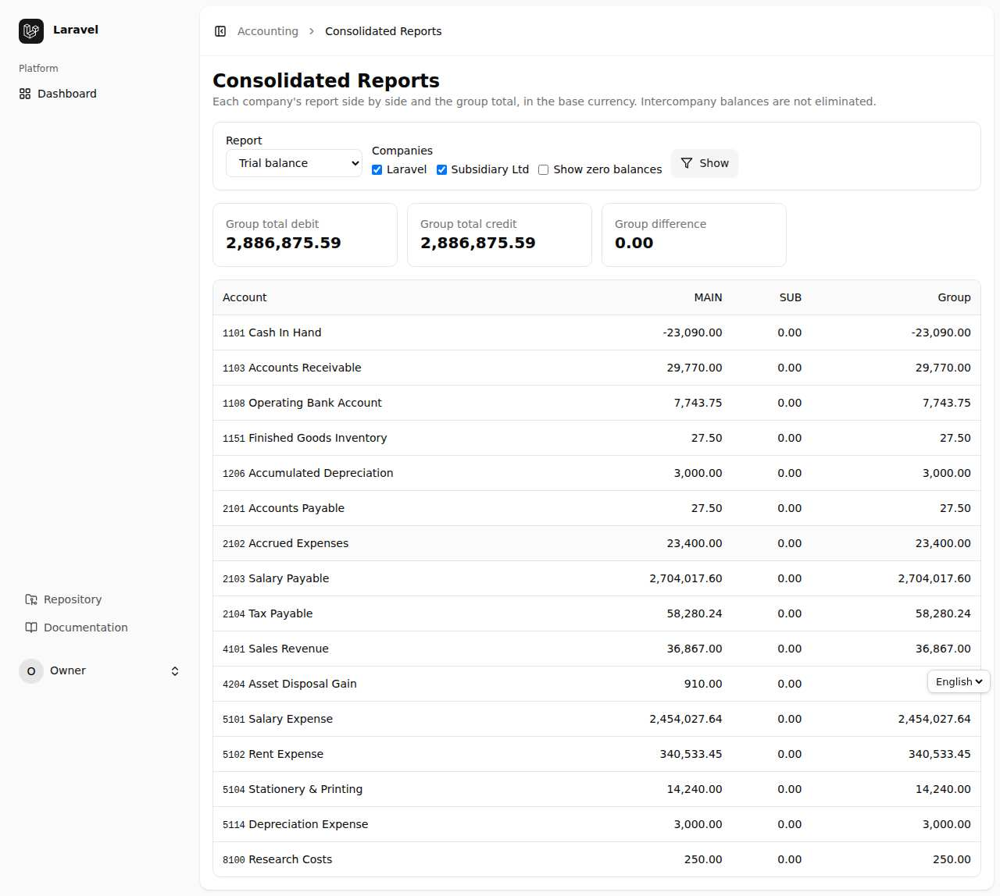
4.11 My Exports — پس منظر کی ایکسپورٹ
بڑی رپورٹ (ہزاروں قطاریں) کی Excel/PDF فوراً نہیں بنتی؛ سسٹم اسے قطار (queue) میں ڈالتا ہے اور تیار ہونے پر My exports میں Download کا لنک آ جاتا ہے۔ صرف ایکسپورٹ کرنے والا اپنی فائل دیکھ/ڈاؤن لوڈ/ڈیلیٹ کر سکتا ہے۔ پرانی فائلیں php artisan accounting:prune-exports سے صاف ہوتی ہیں۔
باب 5: بینک — بینک کھاتے، اسٹیٹمنٹ امپورٹ اور مفاہمت
← پچھلا باب · فہرست · اگلا باب: گاہک و سپلائر →
5.1 بینک اکاؤنٹس (Bank Accounts)
ہر حقیقی بینک کھاتے کو چارٹ کے ایک Asset کھاتے سے جوڑیں۔ بینک کا نام، اکاؤنٹ نمبر اور IBAN یہاں لکھیں۔
5.2 بینک اسٹیٹمنٹ امپورٹ (Bank Statements)
بینک سے ملنے والی اسٹیٹمنٹ (CSV/Excel) کو سسٹم میں لا کر اپنی کتابوں سے ملانے کا تیز طریقہ:
Bank Statements←Import۔- بینک کھاتہ منتخب کریں اور فائل اپ لوڈ کریں۔ سسٹم کالم (تاریخ، تفصیل، Debit/Credit یا رقم، بیلنس) خود پہچان لیتا ہے۔
- ایک ہی فائل دوبارہ اپ لوڈ ہو جائے تو سسٹم ڈپلیکیٹ قطاریں رد کر دیتا ہے۔
5.3 خودکار مماثلت (Matching)
امپورٹ کے بعد اسٹیٹمنٹ کھولیں۔
Auto-matchدبائیں: سسٹم رقم، تاریخ کی قربت اور حوالہ نمبر کے حساب سے مماثل اندراج خود جوڑ دیتا ہے۔- جو قطاریں رہ جائیں ان کے سامنے
Match / bookکھولیں: یا تو فہرست میں سے موجودہ اندراج چنیں، یا وہیں نیا اندراج بُک کریں (مثلاً بینک چارجز یا منافع)۔ - جس قطار کا آپ کے حسابات سے تعلق نہیں اسے
Ignoreکریں؛ غلطی ہو توRestore۔ - غلط مماثلت کو
Unmatchکر کے دوبارہ کریں۔ - جب کوئی قطار غیر مماثل نہ رہے تو
Reconcileکا بٹن چالو ہو جاتا ہے؛ اسے دبا کر اسٹیٹمنٹ مکمل کریں۔ - غلط فائل اپ لوڈ ہو گئی ہو تو
Delete— اس کی مماثلتیں آزاد ہو جاتی ہیں۔

5.4 مفاہمت (Reconciliations)
مفاہمت کا مطلب ہے بینک کی اسٹیٹمنٹ اور آپ کی کتابوں کا ایک تاریخ پر برابر ہونا:
Reconciliations←Create: بینک کھاتہ، اسٹیٹمنٹ کی تاریخ اور اسٹیٹمنٹ کا اختتامی بیلنس لکھیں۔Matchکھولیں اور کتابوں کے وہ اندراجات نشان زد کریں جو بینک میں کلیئر ہو چکے۔- فرق صفر ہو جائے تو مفاہمت مکمل کریں۔
باب 6: گاہک، سپلائر، انوائس، بل اور ادائیگیاں
← پچھلا باب · فہرست · اگلا باب: ٹیکس →
یہ ماڈیول ادھار کی فروخت اور خریداری سنبھالتا ہے۔ ہر انوائس/بل/رسید خود بخود صحیح کنٹرول کھاتوں میں واؤچر بنا دیتی ہے؛ آپ کو ہاتھ سے جرنل نہیں لکھنا پڑتا۔
6.1 گاہک اور سپلائر (Parties)
ایک Party گاہک بھی ہو سکتی ہے، سپلائر بھی، یا دونوں (both)۔ ہر Party کا کوڈ، نام، رابطہ، ادائیگی کی مدت (Credit days) اور حد (Credit limit) ہوتی ہے۔
Party کی تفصیل میں اسٹیٹمنٹ (کس نے کتنا دینا/لینا ہے)، کھلے بل اور ادائیگیاں ایک ساتھ نظر آتی ہیں:
6.2 انوائس اور بل (Invoices & Bills)
اقسام: Invoice (فروخت)، Bill (خریداری)، Credit note اور Debit note۔
Invoices & Bills←New۔- Party، تاریخ اور آخری تاریخ ادائیگی (Due date) لکھیں۔
- لائنیں: بیان، مقدار، قیمت، ٹیکس کوڈ اور کھاتہ (آمدنی/خرچ)۔ ٹیکس خود حساب ہوتا ہے۔
Save— دستاویز Draft رہتی ہے۔Postکرنے پر واؤچر بنتا ہے: Debit Receivable، Credit Revenue اور Tax۔
6.3 وصولی اور ادائیگی (Receipts & Payments)
Receipts & Payments←Receive Payment(گاہک سے) یاMake Payment(سپلائر کو)۔- Party، رقم، تاریخ اور رقم جس کھاتے (کیش/بینک) میں آئی/گئی اسے منتخب کریں۔
- تخصیص (Allocation): رقم کو ایک یا کئی کھلی دستاویزات پر بانٹیں۔ بچی ہوئی رقم پیشگی (Advance) بن کر Party کے کھاتے میں رہتی ہے اور بعد میں کسی نئی انوائس پر لگ سکتی ہے۔
6.4 عمر کا تجزیہ (Ageing)
Receivables aging ہر گاہک کے بقایا کو عمر کے خانوں میں بانٹ کر دکھاتا ہے۔ ریکوری کی ترجیح یہیں سے طے کریں؛ CSV ایکسپورٹ بھی ہے۔
باب 7: ٹیکس
← پچھلا باب · فہرست · اگلا باب: منصوبہ بندی →
7.1 ٹیکس کوڈ اور شرحیں
Tax Code ٹیکس کی قسم ہے (مثلاً GST17 سیلز ٹیکس، Withholding)؛ ہر کوڈ کی Tax Rate تاریخ کے ساتھ درج ہوتی ہے تاکہ شرح بدلنے پر پرانے لین دین پرانی شرح ہی پر رہیں۔ کوڈ کی نوعیت: Output (فروخت پر واجب)، Input (خریداری پر قابل واپسی)، Withheld (کٹوتی) اور Advance (پیشگی ٹیکس)۔
7.2 ٹیکس والا اندراج (Taxed Document)
انوائس/بل کے بغیر بھی فوری ٹیکس والا اندراج بن سکتا ہے: Tax ← Taxed Document۔ قسم (Sale، Purchase، Credit/Debit Note، Withholding) منتخب کریں؛ رقم ٹیکس شامل (inclusive) یا علاوہ (exclusive) لکھیں؛ سسٹم Base، Tax اور Total الگ کر کے واؤچر بنا دیتا ہے (پیسے تک درست، کوئی فرق نہیں)۔
7.3 ٹیکس رپورٹ اور ریٹرن
Tax Report کسی مدت کا Output ٹیکس، Input ٹیکس، کٹوتی شدہ ٹیکس اور خالص قابل ادائیگی دکھاتا ہے۔ ریٹرن تیار ہونے پر Return بنا کر ٹیکس کھاتے کو سرکاری ادائیگی کے کھاتے میں منتقل کیا جاتا ہے؛ ایک مدت کا ریٹرن دوبارہ نہیں بنتا۔
باب 8: بجٹ، مستقل اثاثے اور انوینٹری
← پچھلا باب · فہرست · اگلا باب: پے رول →
8.1 بجٹ (Budgets)
بجٹ آمدنی اور اخراجات کی منصوبہ بندی کھاتے (اور اختیاری Cost Center) اور مہینے کے حساب سے کرتا ہے، پھر اصل (Actual) نتائج سے موازنہ دکھاتا ہے۔
نیا بجٹ بنانے کے مراحل
Budgets←New budget۔- بجٹ کا نام، پہلا اور آخری مہینہ (زیادہ سے زیادہ 24 ماہ) لکھیں۔
Add accountسے ہر کھاتے کی لائن بنائیں: یا سالانہ رقم (جو مہینوں میں برابر بٹتی ہے) یا ماہانہ رقوم الگ الگ۔Save— بجٹ Draft ہے۔ پچھلے سال کے اصل نتائج کی بنیاد پر بنانے کے لیے "Build from last year" (فیصد کمی/اضافے کے ساتھ) استعمال کریں۔
منظوری: Accountant منصوبہ بناتا ہے اور budgets.approve رکھنے والا صارف Approve کرتا ہے۔ ایک مہینے پر صرف ایک منظور شدہ بجٹ لاگو ہو سکتا ہے۔ ضرورت پر Close / Reopen اور اگلے سال کے لیے Copy budget (فیصد تبدیلی کے ساتھ)۔
Budget vs Actual: بجٹ کا صفحہ ہر کھاتے کے لیے بجٹ، اصل، فرق (Variance)، استعمال کا فیصد اور حالت دکھاتا ہے: ok، warning (خرچ بجٹ کے 90% پر)، over (بجٹ سے زیادہ)، behind (آمدنی منصوبے سے کم)، unbudgeted (بغیر بجٹ والا خرچ)۔ کسی قطار پر کلک سے مہینہ وار تفصیل کھلتی ہے۔ Apply سے مہینوں کی حد/Cost Center کا فلٹر لگتا ہے؛ CSV/Excel/PDF ایکسپورٹ ہے۔
اختیاری روک: ترتیب
ACCOUNTING_BUDGET_CONTROL=blockہو تو منظور شدہ بجٹ سے زیادہ کا خرچ پوسٹ ہی نہیں ہوتا (جمع شدہ ماہانہ بجٹ تک)۔budgets.overrideکی اجازت والے صارفین پھر بھی پوسٹ کر سکتے ہیں۔ ڈیفالٹ:off۔
8.2 مستقل اثاثے (Fixed Assets)
اثاثوں کا رجسٹر: کوڈ، لاگت، بچی ہوئی قدر (Salvage)، کارآمد عمر، فرسودگی کا طریقہ (سیدھی لکیر یا گھٹتا توازن) اور تین کھاتے — اثاثہ، جمع شدہ فرسودگی، فرسودگی کا خرچ۔
اثاثہ رجسٹر کرنا
Fixed assets←New asset۔- کوڈ، نام، خریداری کی تاریخ، سروس میں آنے کی تاریخ، لاگت، Salvage، عمر (مہینوں میں)، طریقہ اور تینوں کھاتے لکھیں۔
- Offset account (کیش/بینک/سپلائر) دیں تو خریداری کا واؤچر بھی خود بن جاتا ہے۔
ماہانہ فرسودگی (Depreciation): Depreciation کھولیں، مہینہ منتخب کریں، Preview سے دیکھیں کہ کس اثاثے پر کتنی فرسودگی بنتی ہے، پھر بُک کریں۔ ہر مہینے کا ایک واؤچر، مہینے کی آخری تاریخ کے ساتھ۔ ایک مہینہ ایک اثاثے پر ایک ہی بار بُک ہوتا ہے، اس لیے دوبارہ چلانے سے نقصان نہیں؛ چھوٹے ہوئے مہینے ترتیب سے پورے ہو جاتے ہیں۔
فروخت یا اسکریپ: اثاثے کے صفحے سے Sell or scrap / Dispose: فرسودگی تصرف کی تاریخ سے ایک مہینہ پہلے تک پوری کی جاتی ہے، لاگت اور جمع شدہ فرسودگی ہٹتی ہے، وصولی منتخب کھاتے میں آتی ہے اور نفع/نقصان منتخب کھاتے میں۔
رجسٹر کا مجموعہ اور چارٹ کا بیلنس کا فرق صفر ہونا چاہیے؛ صفحہ یہ فرق دکھاتا ہے۔ جس اثاثے پر خریداری یا فرسودگی کا اندراج ہو چکا ہو اس کی لاگت، عمر، طریقہ اور کھاتے مقفل ہو جاتے ہیں۔
8.3 انوینٹری (Inventory)
اسٹاک اور اس کی قدر حرکتی اوسط لاگت (Moving Average Cost) پر۔
آئٹم بنانا: New item — SKU، نام، اکائی، انوینٹری کھاتہ، Cost of Goods Sold کھاتہ اور Reorder level۔
گودام (Warehouses): ایک یا زیادہ گودام بنائیں؛ اسٹاک ہر گودام میں الگ گنا جاتا ہے۔
اسٹاک کی حرکت (Move stock) — چار اقسام:
| قسم | کام |
|---|---|
Receive |
مال آیا: مقدار، فی اکائی لاگت اور ادائیگی/واجب کا کھاتہ؛ انوینٹری Debit ہوتی ہے |
Issue |
مال گیا: موجودہ اوسط لاگت پر نکلتا ہے اور Cost of Goods Sold Debit ہوتا ہے |
Adjust |
گنتی کا فرق: زیادتی اوسط لاگت پر، کمی نفع/نقصان کھاتے میں |
Transfer |
ایک گودام سے دوسرے میں؛ صرف مقدار منتقل، قدر نہیں بدلتی |
ہر حرکت اور اس کا واؤچر ایک ہی لین دین میں بنتے ہیں؛ بند مدت میں حرکت نہیں ہو سکتی؛ اسٹاک منفی نہیں ہو سکتا۔
آئٹم کا اسٹاک کارڈ: آئٹم کے صفحے پر ہر حرکت اور چلتا بیلنس۔ مرکزی صفحہ ہر آئٹم/گودام کی مقدار، اوسط لاگت اور قدر کسی بھی تاریخ تک دکھاتا ہے، Reorder level پر یا اس سے نیچے والے آئٹم نشان زد ہوتے ہیں اور اسٹاک بہی کا انوینٹری کھاتوں سے موازنہ بھی ہوتا ہے؛ Export سے CSV/Excel/PDF۔
باب 9: پے رول — ملازمین، تنخواہ، بقایا جات، چھٹی، قرض، ٹیکس اور تصفیہ
← پچھلا باب · فہرست · اگلا باب: انتظامی ٹولز →
یہ باب سب سے بڑا ہے کیونکہ پے رول میں سب سے زیادہ کام ہوتا ہے۔ پہلے ہر ماہ کا مختصر طریقہ دیکھیں، پھر ہر اسکرین کی تفصیل۔
9.0 ہر ماہ کا طریقہ — ایک نظر میں
- حاضری درج کریں (
Attendance): غیر حاضر دن، اوور ٹائم گھنٹے۔ چھٹیاںLeaveمیں۔ - ایک بار کی ادائیگیاں (
Bonuses): بونس، جرمانہ وغیرہ۔ - Run بنائیں:
Payroll← مہینہ لکھ کرCalculate۔ ہر ملازم کی پے سلپ خود بن جاتی ہے۔ - جانچیں: ہر پے سلپ کھول کر رقوم دیکھیں؛ غلطی ہو تو ملازم/حاضری درست کر کے
Recalculate۔ - (اگر منظوری کا نظام آن ہے)
Submit for approval← فنانسApprove۔ Post— حسابات میں اندراج۔ (approver)Pay— بینک/کیش سے ادائیگی؛ اورBank salary fileبینک کو بھیجیں۔- پے سلپس ای میل کریں (
E-mail payslips)۔ - مہینے کے آخر میں
Reportsاور سال کے آخر میںTaxدیکھیں۔
9.1 مرکزی صفحہ — Payroll
صفحے پر سال بھر کے مہینہ وار جمع (Gross، Tax، Net) اور تمام Runs کی فہرست ہے۔ اوپر کے بٹن ہر ذیلی صفحے تک لے جاتے ہیں: Employees، Allowances & deductions، Grades، Bulk changes، Arrears، Attendance، Leave، Loans، Contributions، Bonuses، Settlements، Reports، Tax۔ جو فیچر Features میں بند ہو اس کا بٹن نظر نہیں آتا۔
9.2 ملازمین (Employees)
نیا ملازم: Employees ← New employee:
| فیلڈ | مطلب |
|---|---|
Code، Name |
شناخت |
National ID |
شناختی کارڈ نمبر (ٹیکس سرٹیفکیٹ میں آتا ہے) |
E-mail |
یہاں پے سلپ بھیجی جاتی ہے |
Designation، Cost center |
عہدہ اور لاگت کا مرکز |
Joined / Left |
شمولیت/علیحدگی کی تاریخ؛ نئے آنے/جانے والے کو صرف ملازمت کے دنوں کی تنخواہ ملتی ہے |
Monthly basic salary |
بنیادی ماہانہ تنخواہ (Grade دی ہو تو خالی چھوڑ سکتے ہیں) |
Bank، Bank account |
تنخواہ کی ادائیگی کی فائل کے لیے |
Salary grade |
گریڈ؛ ملازم گریڈ کے الاؤنس خود لے لیتا ہے |
Withhold income tax |
انکم ٹیکس کاٹا جائے یا نہیں |
Paid overtime |
اوور ٹائم کا مستحق ہے |
| الاؤنس/کٹوتیاں | ملازم کے اپنے الاؤنس؛ گریڈ والے کو یہ اوور رائیڈ کرتے ہیں |
9.3 الاؤنس اور کٹوتیاں (Components)
ہر Component ایک کمائی (Earning) یا کٹوتی (Deduction) ہے: مثلاً House Rent، Conveyance، Fuel، Medical، Advance Tax۔
| طریقہ (Method) | مثال |
|---|---|
fixed — مقررہ رقم |
Conveyance = 3,100 |
percent_of_basic — بنیادی تنخواہ کا فیصد |
House Rent = 10% |
quantity_rate — مقدار × نرخ |
Fuel = 75 لٹر × 280 روپے |
- Quantity × Rate: نرخ Component پر محفوظ ہوتا ہے اور مقدار ہر ملازم کے لیے۔ پٹرول کا نرخ ایک جگہ بدلیں تو اگلی تنخواہ پر سب ملازمین کی رقم خود بدل جاتی ہے۔
- کمائی ایک خرچ کھاتے میں جاتی ہے؛ کٹوتی اس واجب کھاتے میں جس کو رقم دینی ہے۔
Taxableنشان لگا ہو تو یہ رقم انکم ٹیکس کے حساب میں شامل ہوتی ہے۔
9.4 سیلری گریڈ (Grades)
گریڈ = ایک بنیادی تنخواہ اور اس کے الاؤنس/کٹوتیوں کا پیکج (مثلاً "Grade 17")۔ جو ملازم اس گریڈ پر ہوں وہ گریڈ کے ساتھ چلتے ہیں: گریڈ کا کوئی الاؤنس بدلیں تو اگلی بار سب کو نئی رقم ملتی ہے۔ ملازم کا اپنا الاؤنس/رقم گریڈ پر غالب رہتی ہے۔
9.5 اجتماعی تبدیلیاں (Bulk changes)
بہت سے ملازمین پر ایک ساتھ تبدیلی — پہلے پیش نظارہ (Preview)، پھر اطلاق (Apply):
- کوئی Component سب کو دینا یا سب سے ہٹانا؛
- ملازمین کا گروپ ایک Grade میں منتقل کرنا (اختیاری طور پر ان کی تنخواہ بھی)؛
- تنخواہ میں اضافہ: فیصد کے حساب سے، مقررہ رقم سے، یا ایک نئی رقم مقرر کر کے؛ رقم کو رائونڈ کرنے کا اختیار بھی؛
- کس پر لاگو ہو: منتخب ملازمین، ورنہ گریڈ کے سب ملازمین، ورنہ تمام فعال ملازمین۔
9.5.1 تنخواہ کی تاریخ (Salary history)
ملازم کی ہر تنخواہ تبدیلی ایک ریویژن ہے: تاریخ جس سے لاگو ہو اور وجہ۔ مہینے کے بیچ میں اضافہ ہو تو پرانی تنخواہ اس سے پہلے کے دنوں کی اور نئی اس دن سے آگے کی ادا ہوتی ہے۔
9.6 بقایا جات (Arrears)
مسئلہ: 100 ملازمین کی تنخواہ جنوری سے بڑھی، لیکن اضافہ اکتوبر میں لاگو ہوا۔ جنوری تا ستمبر کا فرق ادا کرنا ہے۔
حل — Arrears اسکرین:
Preview: From month (جنوری) اور Payment month (جس ماہ ادائیگی ہوگی) لکھیں۔ سسٹم پوسٹ شدہ پے سلپوں اور تنخواہ کی تاریخ کا فرق مہینہ بہ مہینہ نکال کر ہر ملازم کی رقم دکھاتا ہے (فیصد والے الاؤنس کا فرق بھی)۔- درست ہو تو Create سے مسودے (Drafts) بنائیں۔
- approver
Approve(یاApprove all) کرے۔ - ادائیگی کے مہینے کا Payroll Run انہیں Arrears کی الگ لائن کے طور پر خود شامل کر لیتا ہے۔
ٹیکس: بقایا پر ٹیکس یوں نکلتا ہے گویا یہ انہی مہینوں میں ملا ہوتا، تاکہ ایک مہینے میں بڑی رقم ملنے سے ملازم اونچے سلیب میں نہ چلا جائے؛ یہ "Income tax on arrears" کی الگ لائن میں آتا ہے۔ ایک مہینہ دو بار کلیم نہیں ہوتا؛ جس مہینے ملازم کو زیادہ ادا ہوا ہو وہ واپس نہیں لیا جاتا۔ Run حذف/Void ہو تو بقایا منظور شدہ قطار میں واپس چلا جاتا ہے۔
9.7 حاضری، چھٹی اور اوور ٹائم
حاضری (Attendance): مہینہ منتخب کر کے ہر ملازم کے لیے Absent days (آدھا دن بھی ممکن) اور Overtime hours لکھیں، Save attendance دبائیں۔ غیر حاضر دن اور بلا تنخواہ چھٹی بنیادی تنخواہ اور مقررہ الاؤنس سے دن کے حساب سے کٹتی ہے؛ فیصد الاؤنس بنیادی تنخواہ کے ساتھ گھٹتے ہیں۔ جس مہینے کی تنخواہ پوسٹ ہو چکی اس کی حاضری نہیں بدل سکتی۔
چھٹیاں (Leave): پہلے Leave type بنائیں (Code، Name، Paid leave، سالانہ حق Annual days)۔ پھر Record leave سے ملازم، قسم، تاریخیں اور آدھا دن لکھیں۔ سسٹم آپس میں ٹکراتی چھٹیاں اور Paid قسم کے بیلنس سے زیادہ چھٹی مسترد کرتا ہے۔ Leave balances میں ہر ملازم/قسم کا حق، لی گئی اور بقیہ چھٹیاں۔
اوور ٹائم: جس ملازم پر Paid overtime نشان ہو اسے گھنٹے × (تنخواہ ÷ ماہانہ گھنٹے) × ضرب (عام دن کی الگ، چھٹی کے دن کی الگ) ملتا ہے؛ یہ پے سلپ پر Overtime کی قابل ٹیکس لائن بنتی ہے۔ ضرب اور ماہانہ گھنٹے ترتیب accounting.payroll.overtime میں۔
9.8 قرض اور پیشگی (Loans & Advances)
Loans← نیا قرض: ملازم، قسم (LoanیاSalary advance)، رقمAmount، قسطوں کی تعدادInstalments، پہلی کٹوتی کا مہینہFirst salary it comes out of۔- قسطیں برابر بنتی ہیں (آخری قسط پیسوں کا فرق سنبھالتی ہے)؛ قرض Draft ہے، کٹوتی ابھی شروع نہیں ہوتی۔
- approver
Pay outدبائے: اور بینک/کیش کھاتہ دے۔ Debit "Employee Advances" (1105)، Credit بینک۔ قرض Active ہو جاتا ہے۔ - ہر Payroll Run واجب الادا قسط کو کٹوتی کے طور پر لے لیتا ہے ("Loan instalment 2/12")۔ Run حذف/Void/دوبارہ حساب ہو تو قسط واپس آ جاتی ہے۔
Skip next— اگلی قسط شیڈول کے آخر میں چلی جاتی ہے۔Settle— ملازم بقیہ رقم نقد واپس کر دے۔ پوری وصولی پر قرض Closed۔- Draft قرض
Cancelہو سکتا ہے۔
9.9 شراکتیں — EOBI، PESSI/SESSI، پراویڈنٹ فنڈ (Contributions)
ہر Scheme میں: بنیاد (basic، gross یا fixed)، ملازم کا فیصد/رقم، آجر کا فیصد/رقم، حد Ceiling (بنیاد کی زیادہ سے زیادہ رقم جو گنی جائے)، اور تین کھاتے۔
- ملازم کا حصہ: تنخواہ سے کٹوتی؛ جس واجب کھاتے کو رقم جانی ہے وہ
Employee accountہے۔ - آجر کا حصہ: ادارے کا خرچ (Employer expense) جو کسی واجب کھاتے (Employer liability) میں جاتا ہے؛ یہ ملازم کی خالص تنخواہ کا حصہ نہیں ہوتا لیکن Run کے ساتھ بُک ہوتا ہے اور پے سلپ پر "Employer contributions" میں دکھایا جاتا ہے۔
Applies to every employeeیا مخصوص ملازمین کوAssign؛ اختیاری طور پر بقایا جات پر بھی لاگو۔
شرحیں آپ کے ہاتھ میں ہیں — انہیں موجودہ سرکاری قوانین سے ضرور ملا لیں۔
9.10 ایک بار کی ادائیگیاں اور بونس (Bonuses)
- ایک ملازم: ملازم، مہینہ، وجہ، رقم؛ قسم Earning (بونس/الاؤنس) یا Deduction (جرمانہ/وصولی)؛ Pay component اختیاری؛
Taxableکا نشان۔ Component نہ ہو تو سادہ بونسaccounting.payroll.bonus_accountمیں (ڈیفالٹ: تنخواہ کا خرچ کھاتہ) جاتا ہے، اور جرمانے کے لیے وہ واجب کھاتہ دینا ہوتا ہے جسے رقم جائے گی۔ - ہر فعال ملازم کو: ایک ہی رقم، یا ہر ایک کی بنیادی تنخواہ کا فیصد (مثلاً عید بونس = بنیادی تنخواہ کا 50%)۔ جو ملازم اس مہینے ملازمت میں نہ ہو اسے چھوڑ دیا جاتا ہے اور فہرست "left out" میں بتائی جاتی ہے۔
- اسی مہینے کا Run انہیں خود شامل کرتا ہے۔ جو اندراج ابھی کسی Run میں نہیں گیا اسے
Cancelکر سکتے ہیں۔ جس مہینے کا Run جمع/منظور/پوسٹ ہو چکا اس میں نیا اندراج نہیں بن سکتا۔
9.11 پے رول Run — بنانا، منظوری، پوسٹ، ادائیگی
Payroll پر مہینہ (Month) لکھ کر Calculate دبائیں۔ ایک مہینے کا ایک ہی Run ہو سکتا ہے۔ سسٹم ہر فعال ملازم کی پے سلپ بناتا ہے: نئے آنے/جانے والے کو ملازمت کے دن، فیصد الاؤنس، گریڈ، حاضری/چھٹی، اوور ٹائم، بقایا جات، شراکتیں، قرض کی قسطیں، بونس، اور انکم ٹیکس (accounting.payroll.tax_slabs کے سلیب سے؛ ڈیفالٹ مثال کے طور پر ہیں، انہیں موجودہ قوانین سے ملا لیں)۔ منفی خالص تنخواہ رد ہو جاتی ہے۔
| بٹن | کب | کیا کرتا ہے |
|---|---|---|
Recalculate |
Draft | ملازمین/حاضری/الاؤنس بدلنے کے بعد پے سلپیں دوبارہ بناتا ہے |
Delete |
Draft | Run ہٹاتا ہے (قرض/بقایا/بونس واپس) |
Submit for approval |
Draft، منظوری کا نظام آن | Run کو فنانس کے پاس بھیج کر مقفل کرتا ہے |
Approve / Send back |
Submitted، payroll.approve |
منظور، یا وجہ لکھ کر HR کو واپس |
Withdraw |
Submitted/Approved | Run کو Draft میں واپس لیتا ہے |
Post |
Draft (یا Approved) | حسابات میں اندراج: بنیادی تنخواہ و کمائیاں خرچ، کٹوتیاں/ٹیکس واجب، خالص تنخواہ Net salary payable (2103) میں |
Pay |
Posted | واجب تنخواہ کو بینک/کیش کھاتے سے ادا کرتا ہے |
Void |
Posted/Paid | ادائیگی اور تنخواہ کا اندراج الٹ دیتا ہے؛ مہینہ دوبارہ بن سکتا ہے |
منظوری کا نظام (HR → فنانس): ترتیب accounting.payroll.require_approval یا Features میں "Run approval" آن ہو تو HR (payroll.run) Submit for approval کرتا ہے، فنانس (payroll.approve) Approve یا Send back — وجہ لازمی؛ جس نے Submit کیا وہ خود Approve نہیں کر سکتا۔ منظوری کے بعد ہی Post ممکن ہے۔ ہر مرحلہ Audit Log میں درج ہوتا ہے۔
9.12 پے سلپ
Run میں ملازم کے نام پر کلک سے اس کی پے سلپ کھلتی ہے: کمائیاں (بنیادی، الاؤنس، اوور ٹائم، بقایا)، کٹوتیاں (ٹیکس، قرض، شراکتیں)، آجر کی شراکتیں اور خالص تنخواہ۔
Print— پرنٹ کے قابل صفحہ؛PDF— PDF فائل (PDF لائبریری نہ ہو تو HTML)؛E-mail— ملازم کے ای میل پر؛ Run کے صفحے پرE-mail payslipsسب کو ایک ساتھ بھیجتا ہے؛ جن ملازمین کا ای میل درج نہیں وہ "skipped" کی فہرست میں آتے ہیں۔
9.13 بینک تنخواہ فائل (Bank file)
Posted Run کے صفحے پر Bank salary file: اپنے بینک کے فارمیٹ (standard، IBAN یا آپ کا بنایا ہوا) کا CSV یا Excel ڈاؤن لوڈ کریں۔ جن ملازمین کا بینک اکاؤنٹ درج نہیں ان کا نام فائل سے باہر رہتا ہے اور اسکرین پر الگ دکھایا جاتا ہے۔ اس کے لیے payroll.post کی اجازت چاہیے۔
9.14 حتمی تصفیہ (Final Settlement)
ملازم ادارہ چھوڑے تو Settlements میں:
- ملازم اور آخری دن منتخب کریں؛ اختیاری طور پر
Gratuity،Leave days paidاورAdjustment(+ادائیگی/− وصولی) خود لکھیں۔ Preview: گریجویٹی = (سالانہ دن ÷ 30) × بنیادی تنخواہ × سالِ ملازمت (کم از کم مدت کے بعد)؛ چھٹی کی ادائیگی = بچی ہوئی چھٹیاں × روزانہ اجرت؛ قرض جو ملازم کے ذمہ ہے خود منہا؛ نتیجہ Net settlement۔Save draft— پھر approverPost(حسابات میں اندراج، قرض Closed) اورPay؛ غلطی ہو توVoid(قرض دوبارہ کھل جاتے ہیں)۔- ایک ملازم کا Posted/Paid تصفیہ ہو جائے تو دوسرا نہیں بن سکتا؛ Draft کی جگہ نیا Draft لے لیتا ہے۔
قواعد accounting.payroll.gratuity میں (دن فی سال، کم از کم سال، کھاتے، چھٹی کی قسم)۔
9.15 ٹیکس گوشوارہ اور سرٹیفکیٹ
Tax میں ٹیکس سال (ڈیفالٹ جولائی تا جون؛ accounting.payroll.tax_year_start_month) کے لیے ہر ملازم کی قابل ٹیکس آمدنی، کٹوتی شدہ ٹیکس اور خالص تنخواہ — Posted Run سے۔ CSV/Excel/PDF میں ایکسپورٹ۔ ملازم منتخب کر کے Open certificate سے اس کا ٹیکس سرٹیفکیٹ کھلتا ہے، جسے Print کیا جا سکتا ہے۔
9.16 پے رول رپورٹیں
Reports: مہینہ بہ مہینہ (ملازمین، Gross، Tax، Net، آجر کی شراکتیں، کل لاگت، فی ملازم لاگت اور پچھلے مہینے سے تبدیلی)، Cost center کے حساب سے لاگت، اور Headcount (کتنے آئے، گئے، کتنے پے رول پر ہیں)۔ تینوں CSV/Excel/PDF میں۔
9.17 خودکار Run
ہر مہینے Run خود بنوانے کے لیے php artisan accounting:payroll-run [--month=2026-10] [--company=1] (ڈیفالٹ: پچھلا مہینہ؛ جس مہینے کا Run موجود ہو اسے چھوڑ دیتی ہے)۔ ہر ماہ خودکار چلانے کے لیے ترتیب accounting.payroll.auto_run آن کریں۔ Run Draft بنتا ہے — جانچ، منظوری اور Post پھر بھی آپ ہی کرتے ہیں۔
9.18 اجازتیں اور فرائض کی تقسیم
| اجازت | کیا |
|---|---|
payroll.view |
پے رول دیکھنا |
payroll.manage |
ملازمین، الاؤنس، گریڈ، حاضری، قرض، بونس وغیرہ میں ترمیم |
payroll.run |
Run بنانا/دوبارہ حساب/حذف/Submit |
payroll.approve |
Run منظور/واپس |
payroll.post |
Post، Pay، قرض کی ادائیگی، بقایا کی منظوری، بینک فائل |
payroll.void |
Void |
عام ترتیب: Accountant تیار کرتا ہے؛ Approver منظور، Post، Pay اور Void — تاکہ ایک ہی شخص پورا چکر خود نہ کر سکے۔
باب 10: انتظامی ٹولز — صارفین، رولز، فیچرز، کمپنیاں اور آڈٹ
← پچھلا باب · فہرست · اگلا باب: API گائیڈ →
10.1 صارفین (Users)
Users میں تمام صارف ہیں۔ New user سے نام، ای میل، پاس ورڈ اور رول دے کر نیا صارف بنائیں۔ صارف کو براہ راست اجازتیں (Permissions) بھی دی جا سکتی ہیں، رول کے علاوہ۔ ہر تبدیلی Audit Log میں جاتی ہے۔
صارف کو ڈیلیٹ کرنے کے بجائے اس کے رول ہٹا دینا زیادہ محفوظ ہے، تاکہ پرانا ریکارڈ (کس نے کیا بنایا) محفوظ رہے۔
10.2 رولز اور اجازتیں (Roles & Permissions)
Roles میں رولز کی فہرست، ہر رول کے ارکان کی تعداد اور اجازتیں ہیں۔ رول کھول کر اجازتوں کا میٹرکس نظر آتا ہے: ہر ماڈیول کی view، create، update، delete، post، approve وغیرہ کے خانے۔ super-admin کو حذف یا گھٹایا نہیں جا سکتا۔
ڈیفالٹ رولز کا خلاصہ باب 1 میں ہے۔ اپنے ادارے کی ضرورت کے مطابق نیا رول بنائیں (مثلاً "Payroll officer": payroll.view، payroll.manage، payroll.run)۔ کمانڈ لائن پر php artisan accounting:roles موجودہ رولز دکھاتی/لگاتی ہے۔
10.3 فیچرز — ہر چیز آن/آف (Feature Switches)
مقصد: جو ماڈیول آپ کے کام کا نہیں اسے بند کر دیں تاکہ مینو صاف رہے اور عملہ غلطی سے وہاں نہ جائے؛ ضرورت پڑے تو دوبارہ آن۔
Features (/accounting/features، Blade میں /settings/features) صرف accounting.manage-settings والے صارف کے لیے ہے۔ فہرست دو حصوں میں ہے: Modules (Customers & suppliers، Tax، Banking، Budgets، Fixed assets، Inventory، Recurring entries، FX revaluation، Attachments، Statement layout، Chart templates، Control accounts، Snapshots، Audit log، Payroll) اور Payroll کے ذیلی فیچر (Grades، Arrears، Attendance، Loans، Contributions، Bank file، Payslip e-mail، Bonuses، Run approval، Settlements، Reports & tax)۔
طریقہ: خانہ ہٹائیں/لگائیں ← Save۔
بند کرنے کا اثر:
- مینو اور Dashboard سے لنک غائب؛
- اس فیچر کی ہر ویب اسکرین اور API 404 دیتی ہے؛
- ڈیٹا ڈیلیٹ نہیں ہوتا — دوبارہ آن کرتے ہی سب واپس؛
- ذیلی فیچر اپنے والدین (Parent) کے بند ہونے پر خود بند ہو جاتا ہے (مثلاً Payroll بند تو Loans بھی)؛
- Payroll انجن بند فیچر کو چھوڑ دیتا ہے (قرض کی قسط، حاضری، شراکت، بقایا، بونس شامل نہیں ہوتے)؛
- Recurring اور Payroll کی کمانڈیں اپنا ماڈیول بند ہو تو کچھ نہیں کرتیں؛
- ہر تبدیلی Audit Log میں
FEATURE_ENABLED/FEATURE_DISABLEDکے طور پر۔
Core (چارٹ، واؤچر، پیرئیڈ، رپورٹیں، صارفین) بند نہیں ہو سکتا۔ منظوری کا نظام اور Multi-company کے اپنے سوئچ ترتیب (config) میں ہیں۔
کمانڈ لائن سے:
php artisan accounting:features # list
php artisan accounting:features disable inventory fixed_assets
php artisan accounting:features enable payroll_loans
php artisan accounting:features reset budgets # back to the config default
ڈیفالٹ بند رکھنے کے لیے: .env میں ACCOUNTING_FEATURES_DISABLED="inventory,fixed_assets"۔ اسکرین/API/کمانڈ سے محفوظ کی گئی ترتیب اس پر غالب رہتی ہے۔
10.4 کمپنیاں (Companies)
Multi-company آن ہو (ACCOUNTING_MULTI_COMPANY=true) تو Companies میں کمپنیاں بنائیں اور ہر کمپنی کے صارف مقرر کریں۔ ہر کمپنی کا اپنا چارٹ، واؤچر، نمبرنگ، مدتیں اور رپورٹیں ہیں۔ کمانڈ: php artisan accounting:create-company۔
10.5 آڈٹ لاگ (Audit Logs)
Audit Logs میں ہر اہم عمل: کس صارف نے، کب، کس IP سے، کون سا ریکارڈ، پرانی اور نئی قدریں۔ فلٹر سے کھاتہ/صارف/عمل/تاریخ کے حساب سے تلاش کریں۔ لاگ میں ترمیم یا حذف کا کوئی بٹن نہیں — یہ صرف پڑھنے کے لیے ہے۔
10.6 ذاتی ترتیبات (Profile، Security، Appearance)
اوپر دائیں کونے سے اپنے نام پر کلک ← Settings: Profile (نام/ای میل)، Security (پاس ورڈ بدلنا اور سیکیورٹی کی ترتیبات)، Appearance (روشن/تاریک تھیم)۔
10.7 نیا ادارہ شروع کرنے کی ترتیب (تجویز)
- چارٹ ٹیمپلیٹ لگائیں (باب 2.1)۔
- بنیادی کرنسی اور شرحیں، پھر مالی سال کی مدتیں (
Generate monthly)۔ - Cost Centers، Voucher Types، بینک اکاؤنٹس۔
- ابتدائی بیلنس کا ایک واؤچر (Opening Balance Equity کے ساتھ)۔
- صارف اور رولز؛ غیر ضروری ماڈیول Features میں بند۔
php artisan accounting:health-checkسے جانچ۔
باب 11: API گائیڈ — ہر ماڈیول کا REST انٹرفیس
← پچھلا باب · فہرست · اگلا باب: کمانڈیں اور عام سوالات →
ہر وہ کام جو اسکرین پر ہوتا ہے، API سے بھی ہو سکتا ہے — موبائل ایپ، ویب سائٹ، یا دوسرے سافٹ ویئر (مثلاً POS) کو جوڑنے کے لیے۔ تمام 311 endpoints کی مکمل فہرست (انگریزی میں، اجازت کے ساتھ) Help Catalog میں ہے؛ اس باب میں استعمال کا طریقہ ہے۔
11.1 بنیادی معلومات
| چیز | قدر |
|---|---|
| Base URL | https://your-app.test/api/v1/accounting (ACCOUNTING_API_PREFIX سے بدلتا ہے) |
| تصدیق | Laravel Sanctum ٹوکن: Authorization: Bearer <token> |
| ہیڈر | Accept: application/json اور Content-Type: application/json |
| کمپنی (Multi-company) | X-Company: <id یا code> — نہ دیں تو آپ کی ڈیفالٹ کمپنی |
| رفتار کی حد | ڈیفالٹ 120 درخواستیں فی منٹ فی صارف (ACCOUNTING_API_RATE_LIMIT) |
| اجازت | ہر endpoint ایک Permission مانگتا ہے؛ نہ ہو تو 403 |
11.2 ٹوکن بنانا
php artisan tinker --execute="echo App\Models\User::first()->createToken('erp')->plainTextToken;"
اس ٹوکن کو محفوظ رکھیں؛ یہ صارف کے تمام اختیارات کے ساتھ آتا ہے۔ الگ ایپ کے لیے الگ صارف (کم اختیارات والا رول) بنائیں۔
11.2.1 پہلی کال
TOKEN=1|xxxxxxxx
API=http://localhost:8000/api/v1/accounting
H=(-H "Accept: application/json" -H "Authorization: Bearer $TOKEN" -H "Content-Type: application/json")
# is everything installed?
curl "${H[@]}" $API/health
11.3 واؤچر بنانا اور پوسٹ کرنا
# simplest entry: debit one account, credit another (posts at once)
curl "${H[@]}" -X POST $API/journal-entries/simple \
-H "Idempotency-Key: rent-2026-10" \
-d '{"debit_account_code":"5102","credit_account_code":"1101","amount":2500,"description":"Office rent"}'
# several lines, by account code
curl "${H[@]}" -X POST $API/journal-entries -d '{
"entry_date": "2026-10-04", "reference": "INV-1001", "auto_post": true,
"lines": [
{"account_code": "1103", "debit": 1500, "credit": 0, "cost_center_code": "ADMIN"},
{"account_code": "4101", "debit": 0, "credit": 1500}
]}'
Idempotency-Key: ایک ہی درخواست دوبارہ بھیجی جائے (نیٹ ورک ٹوٹنے پر) تو سسٹم واؤچر دوبارہ نہیں بناتا بلکہ پہلا ہی لوٹاتا ہے (Idempotent-Replayed: true)۔auto_post: true— فوراً پوسٹ؛ ورنہ Draft۔ بعد میںPOST /journal-entries/{id}/post۔- منظوری کا نظام آن ہو تو
POST /journal-entries/{id}/submitاور پھر approver…/approveیا…/reject۔ - غلطی درست کرنے کے لیے
…/reverse؛ Draft کے لیے…/void۔
11.4 رپورٹیں
curl "${H[@]}" "$API/chart-of-accounts/tree"
curl "${H[@]}" "$API/reports/trial-balance"
curl "${H[@]}" "$API/reports/income-statement?date_from=2026-01-01&date_to=2026-12-31"
curl "${H[@]}" "$API/reports/balance-sheet?as_of_date=2026-12-31"
curl "${H[@]}" "$API/reports/general-ledger?account_id=1&per_page=50&page=2"
# download (same filters)
curl "${H[@]}" -o tb.csv "$API/reports/trial-balance/export/csv"
بڑی Excel/PDF پر جواب 202 کے ساتھ آتا ہے؛ اس کی فائل GET /exports سے ڈھونڈ کر …/download کریں۔
11.5 فہرستوں کے فلٹر، ترتیب اور صفحہ بندی
- فلٹر:
?filter[name]=cash&filter[status]=posted - ترتیب:
?sort=entry_dateیا الٹی?sort=-entry_date - صفحہ:
?page=2&per_page=50(زیادہ سے زیادہACCOUNTING_API_MAX_PER_PAGE، ڈیفالٹ 100) - واؤچر پر اضافی:
filter[approval_status]=pending،filter[voucher_number]،filter[entry_date_from]/filter[entry_date_to]،include=lines
11.6 غلطیاں
| کوڈ | مطلب |
|---|---|
401 |
ٹوکن نہیں / غلط |
403 |
اجازت نہیں |
404 |
ریکارڈ نہیں ملا، یا اس فیچر کو Features میں بند کیا گیا ہے |
422 |
ڈیٹا غلط (errors میں فیلڈ وار) یا حسابی اصول کی خلاف ورزی (message میں وجہ) |
429 |
رفتار کی حد |
11.7 ماڈیول وار API — آپ کیا کر سکتے ہیں
| ماڈیول | مثالیں (راستہ /api/v1/accounting کے بعد) |
|---|---|
| چارٹ اور ماسٹر ڈیٹا | /chart-of-accounts (+ /tree, /{id}/balance, /import, /export/{format}, /{id}/merge, /{id}/renumber, /{id}/control-type), /account-types, /currencies, /cost-centers, /voucher-types, /periods (+ /generate-monthly, /{id}/close-checklist, /{id}/close, /{id}/reopen, /{id}/close-fiscal-year) |
| واؤچر | /journal-entries (+ /simple, /{id}/post, /reverse, /void, /submit, /approve, /reject, /attachments, /pdf) |
| رپورٹیں | /reports/{trial-balance، balance-sheet، income-statement، general-ledger، cash-flow، bank-book، cash-book، aged-receivables، aged-payables، account-statement} اور /export/{csv\|xlsx\|pdf} |
| بینک | /bank-accounts, /reconciliations, /bank-statements (+ /import, /{id}/auto-match, /{id}/reconcile) |
| گاہک و سپلائر | /parties, /party-documents (+ /{id}/post, /{id}/void, /{id}/apply), /party-payments (+ /{id}/allocate, /{id}/void), /reports/aged-receivables |
| ٹیکس | /tax-codes, /tax-rates, /tax/calculate, /tax/entries, /tax/returns |
| بجٹ | /budgets (+ /{id}/approve, /{id}/close, /{id}/reopen, /{id}/copy, /{id}/export/{format}) |
| تکرار والے واؤچر / FX | /recurring-entries (+ /{id}/run, /{id}/pause, /{id}/resume)، /fx-revaluation (+ /preview, /rates, /{id}/reverse) |
| اثاثے / انوینٹری | /fixed-assets (+ /depreciation, /{id}/dispose, /export/{format})، /inventory (+ /items, /warehouses, /movements, /export/{format}) |
| پے رول | /payroll/employees, /payroll/components, /payroll/grades, /payroll/runs (+ /{id}/recalculate, /post, /pay, /void, /submit, /withdraw, /approve, /reject, /bank-file/{format}, /email-payslips), /payroll/attendance, /payroll/leaves, /payroll/loans, /payroll/schemes, /payroll/arrears, /payroll/adjustments, /payroll/settlements, /payroll/reports, /payroll/tax |
| انتظام | /users, /roles, /permissions, /companies, /features, /account-balance-snapshots, /exports, /attachments |
تفصیلی فہرست (ہر endpoint کا طریقہ، اجازت اور مختصر وضاحت): Help Catalog۔ پیرامیٹر اور جوابات کی مکمل شکل:
openapi.yaml— اسے Swagger UI/Redoc میں کھولیں یا Postman/Insomnia میں امپورٹ کریں۔
11.8 پے رول کا مکمل API مثال
# 1) create the month's run
curl "${H[@]}" -X POST $API/payroll/runs -d '{"period_month":"2026-10-01"}'
# 2) (when approval is on) HR submits, finance approves
curl "${H[@]}" -X POST $API/payroll/runs/12/submit
curl "${H[@]}" -X POST $API/payroll/runs/12/approve
# 3) post and pay
curl "${H[@]}" -X POST $API/payroll/runs/12/post
curl "${H[@]}" -X POST $API/payroll/runs/12/pay -d '{"account_id": 7, "date": "2026-10-31"}'
# 4) bank file and payslip e-mail
curl "${H[@]}" -o salary.csv "$API/payroll/runs/12/bank-file/csv?layout=standard"
curl "${H[@]}" -X POST $API/payroll/runs/12/email-payslips
# 5) Eid bonus for everybody: 50% of basic salary
curl "${H[@]}" -X POST $API/payroll/adjustments/bulk \
-d '{"month":"2026-10-01","description":"Eid bonus","method":"percent_of_basic","value":50}'
11.9 فیچرز کا API
curl "${H[@]}" $API/features # list
curl "${H[@]}" -X PUT $API/features -d '{"features":{"inventory":false,"payroll_loans":false}}'
بند فیچر کے endpoints پھر 404 دیں گے۔
11.10 ویب ہکس اور ایونٹس
ہر اہم واقعہ (واؤچر پوسٹ، رد، پیرئیڈ بند وغیرہ) پر Laravel Event چلتا ہے؛ ترتیب accounting.webhooks.urls میں ایڈریس دیں تو سسٹم دستخط (HMAC) کے ساتھ آپ کے سرور کو POST بھی کرتا ہے۔ وصول کنندہ دستخط جانچ کر درخواست کی تصدیق کرے۔
باب 12: کمانڈیں، عام سوالات اور اصطلاحات
← پچھلا باب · فہرست · ضمیمہ →
12.1 Artisan کمانڈیں
سرور کے ٹرمنل میں پروجیکٹ کے فولڈر میں چلائیں:
| کمانڈ | کام |
|---|---|
php artisan accounting:install |
پیکیج کی تنصیب: سوالات، .env، ایڈمن یوزر، مائیگریشن، رولز، ڈیفالٹ ڈیٹا اور سائیڈ بار کا مینو (--chart=erpnext\|general\|school، --ui، --currency، --prefix، --admin-email، --setup-only) (باب 16) |
php artisan accounting:update |
اپ ڈیٹ کے بعد نئی مائیگریشن/اجازتیں لگانا (--views سے شائع شدہ Blade اسکرینیں بھی نئی) |
php artisan accounting:seed |
ڈیفالٹ چارٹ/اقسام/کرنسیاں لگانا (--company= کے ساتھ ایک کمپنی کے لیے) |
php artisan accounting:health-check |
جانچ کہ سب کچھ درست انسٹال ہے (503 اگر نہیں) |
php artisan accounting:verify |
حسابات کی سالمیت کی جانچ: ہر واؤچر متوازن، ٹرائل بیلنس برابر |
php artisan accounting:roles |
رولز اور اجازتیں دکھانا/لگانا (--config سے ڈیفالٹ) |
php artisan accounting:create-company |
نئی کمپنی بنانا (Multi-company) |
php artisan accounting:close-period {id} |
مہینے کی کلوزنگ |
php artisan accounting:open-period {id} |
بند مدت دوبارہ کھولنا |
php artisan accounting:close-fiscal-year {id} |
سال کے اختتام کی کلوزنگ |
php artisan accounting:rebuild-snapshots |
بیلنس اسنیپ شاٹ دوبارہ بنانا |
php artisan accounting:run-recurring |
دہرائے جانے والے واؤچر بنانا (شیڈولر روزانہ خود چلاتا ہے) |
php artisan accounting:payroll-run |
پچھلے مہینے کا پے رول Run (Draft) بنانا |
php artisan accounting:account-roles |
کون سا کھاتہ کس کام (کیش، بینک، تنخواہ ...) کے لیے ہے: فہرست، set، seed (باب 14) |
php artisan accounting:whatsapp |
WhatsApp کی سیٹنگ دیکھیں (status)، آزمائشی پیغام (test +92300…)، ٹیمپلیٹ فہرست (templates) (باب 15) |
php artisan accounting:features |
فیچرز کی فہرست / enable / disable / reset |
php artisan accounting:chart-templates |
صنعتی چارٹ ٹیمپلیٹ لگانا |
php artisan accounting:prune-exports |
پرانی ایکسپورٹ فائلیں صاف کرنا |
php artisan accounting:sync-db-objects |
ڈیٹا بیس کی سطح کے اصول (triggers) دوبارہ ہم آہنگ کرنا |
شیڈولر: سرور کی cron میں * * * * * php /path/artisan schedule:run ہونا چاہیے۔ اس سے Recurring اور (اگر آن ہو) خودکار پے رول Run چلتے ہیں۔
12.2 عام سوالات
س: واؤچر پوسٹ نہیں ہو رہا — "period is closed" یا "not balanced"؟
ج: تاریخ جس مدت میں ہے وہ بند ہے (Periods میں دیکھیں، یا کھولیں)، یا Debit ≠ Credit۔
س: میں کسی ماڈیول (مثلاً Inventory) کا لنک نہیں دیکھ پا رہا؟
ج: دو وجوہات: (1) آپ کے رول کے پاس اس کی view اجازت نہیں؛ (2) Features میں وہ فیچر بند ہے۔ بند ہو تو ایڈمن سے Features میں آن کروائیں۔
س: پوسٹ شدہ واؤچر میں غلطی ہو گئی؟
ج: ایڈٹ/ڈیلیٹ ممکن نہیں۔ Reverse کریں اور درست واؤچر نیا بنائیں۔
س: دو لوگوں نے ایک ہی بل کا واؤچر بنا دیا؟ ج: Source document (قسم+نمبر) کی وجہ سے دوسرا واؤچر بنتا ہی نہیں؛ سسٹم پہلے والے کا لنک دکھاتا ہے۔
س: پے رول Run میں کسی ملازم کا نام نہیں؟
ج: وہ فعال (Active) نہیں، یا اس کی Joined تاریخ اس مہینے کے بعد ہے، یا Left تاریخ مہینے کے آغاز سے پہلے ہے۔
س: Run میں "negative net salary" کی غلطی؟
ج: کٹوتیاں (قرض کی قسط، شراکتیں، جرمانے) تنخواہ سے زیادہ ہیں۔ قسط کو Skip next کریں، یا کٹوتی گھٹائیں، پھر Recalculate۔
س: میں نے Run Post کر دیا، اب حاضری یا بونس بدلنا ہے؟
ج: Post شدہ مہینے کی حاضری/بونس نہیں بدلتی۔ Void کریں (approver)، تبدیلی کریں، پھر نیا Run بنائیں؛ یا اگلے مہینے میں بونس/جرمانہ ڈالیں۔
س: پے سلپ ای میل نہیں گئی؟
ج: ملازم کا E-mail درج نہیں ہوگا — وہ "skipped" میں شمار ہوتا ہے۔ سرور پر ای میل (SMTP) کی ترتیب بھی چیک کریں۔
س: API 404 دیتی ہے لیکن راستہ درست ہے؟
ج: متعلقہ فیچر Features میں بند ہوگا (404 کا مطلب "یہ فیچر موجود نہیں")۔
س: انگریزی الفاظ اردو اسکرین پر آ رہے ہیں؟
ج: کچھ فقرے ابھی ترجمہ کی فہرست (resources/lang/ur.json) میں نہیں۔ فہرست میں انگریزی فقرے کے سامنے اردو لکھ دیں؛ اسکرین پر وہ فوراً بدل جائے گا۔
12.3 اہم اصطلاحات
| انگریزی | اردو مفہوم |
|---|---|
| Journal Entry / Voucher | جرنل اندراج / واؤچر |
| Debit / Credit | ڈیبٹ (مدین) / کریڈٹ (دائن) |
| Chart of Accounts | کھاتوں کا چارٹ |
| Posting / Post | کھاتوں میں درج کرنا |
| Reverse / Void | الٹانا / منسوخ کرنا |
| Draft | مسودہ (ابھی درج نہیں) |
| Period / Fiscal Year | مالی مدت / مالی سال |
| Trial Balance | ٹرائل بیلنس (کھاتوں کا میزان) |
| Balance Sheet | بیلنس شیٹ (مالی حیثیت کا گوشوارہ) |
| Income Statement | آمدنی کا گوشوارہ (منافع و نقصان) |
| Cash Flow | نقدی کا بہاؤ |
| Receivable / Payable | وصولی / قابل ادائیگی (ادھار) |
| Ageing | بقایا کی عمر کا تجزیہ |
| Reconciliation | مفاہمت (بینک سے ملانا) |
| Accrual / Prepayment | واجب الادا خرچ / پیشگی ادا شدہ |
| Depreciation | فرسودگی |
| Gratuity | گریجویٹی |
| Arrears | بقایا جات |
| Payslip | پے سلپ (تنخواہ کی پرچی) |
| Gross / Net | مجموعی / خالص |
| Withholding Tax | روکا ہوا (کٹوتی شدہ) ٹیکس |
| Maker–Checker | بنانے والا اور جانچنے والا (دو آنکھیں) |
| Permission / Role | اجازت / رول |
| Feature switch | فیچر آن/آف کا سوئچ |
ضمیمہ: بقیہ اسکرینیں — نیا، تفصیل اور ترمیم کے صفحات
← پچھلا باب · فہرست · اگلا باب: فلٹر، چارٹ اور Account Roles →
پچھلے ابواب میں ہر ماڈیول کی بنیادی اسکرینیں آ چکی ہیں۔ یہاں وہ عمومی صفحات ہیں جو کئی ماڈیولز میں اسی انداز سے دہرائے جاتے ہیں۔ ہر ماسٹر ڈیٹا (Account Types، Currencies، Periods، Cost Centers، Bank Accounts، Reconciliations، Tax Codes، Tax Rates) میں چار صفحے ہوتے ہیں:
| صفحہ | کب | کام |
|---|---|---|
| فہرست (Index) | ہمیشہ | تلاش/فلٹر، Create کا بٹن، ہر قطار سے تفصیل/ترمیم |
| نیا (Create) | .create اجازت |
فارم بھر کر Save |
| تفصیل (Show) | .view اجازت |
مکمل ریکارڈ، متعلقہ ڈیٹا |
| ترمیم (Edit) | .update اجازت |
فارم میں تبدیلی؛ استعمال میں آ چکے ریکارڈ کے کچھ فیلڈ مقفل ہوتے ہیں |
حذف (Delete) کا بٹن صرف اسی ریکارڈ پر آتا ہے جو کہیں استعمال نہ ہوا ہو۔
اکاؤنٹ ٹائپس
کرنسیاں
مالی مدتیں
کھاتے، بینک اکاؤنٹ، مفاہمت
ٹیکس کوڈ اور شرح
Party، دہرائے جانے والے واؤچر، بیلنس اسنیپ شاٹ
ذاتی ترتیبات
ڈیٹا کے راستے جو براؤزر میں JSON دکھاتے ہیں
پے رول کے کچھ راستے (مثلاً /accounting/payroll/loans/{id}، /payroll/grades/{id}، /payroll/schemes/{id}، /payroll/settlements/{id}) اسکرین نہیں بلکہ ڈیٹا کے راستے ہیں: ان پر براؤزر میں JSON ملتا ہے۔ یہ اسکرینوں کے اندر کی ٹیبلوں اور API کو ڈیٹا دیتے ہیں؛ ان کی مکمل فہرست Help Catalog میں ہے۔
باب 14: فلٹر اور تلاش، ERPNext کھاتوں کا چارٹ، اور Account Roles
14.1 ہر فہرست میں فلٹر اور تلاش
مقصد: ہزاروں ریکارڈ میں سے وہی نکالنا جو چاہیے — نام/نمبر سے، حالت سے، تاریخ یا رقم کی حد سے۔
ہر فہرست (گاہک و سپلائر، انوائس اور بل، وصولی/ادائیگی، فکسڈ اثاثے، انوینٹری، بجٹ، بینک اسٹیٹمنٹ، Recurring، پے رول کی تمام فہرستیں، صارفین، رولز، Voucher Types، کمپنیاں، ٹیکس، مدتیں وغیرہ) کے اوپر فلٹر بار ہے۔ خانے بھریں ← Filter۔ جتنے فلٹر لگے ہوں Reset (تعداد) اتنی تعداد دکھاتا ہے؛ اس پر دبانے سے سب ہٹ جاتے ہیں۔
- Search خانہ نام، کوڈ، نمبر یا حوالہ کا کوئی بھی حصہ ڈھونڈتا ہے، بڑے/چھوٹے حروف کا فرق نہیں۔
100%لکھیں تو واقعی100%والا ہی ملے گا (%اور_عام حروف ہیں)۔ - تاریخ (
Issued from،Due toوغیرہ) اور رقم (Total from،Total up to) کی حد دی جا سکتی ہے۔ - ایک سے زیادہ فلٹر ایک ساتھ لگیں تو ریکارڈ کو سب شرطیں پوری کرنی ہوں گی۔
- پتے (URL) میں فلٹر نظر آتے ہیں، اس لیے فلٹر شدہ صفحے کا لنک کسی کو بھیجا جا سکتا ہے۔
- یہی نام API میں بھی چلتے ہیں:
GET /api/v1/accounting/party-documents?filter[search]=rent&filter[status]=posted&sort=-total(مختصر شکل?search=rent&status=postedبھی چلتی ہے)۔ نامعلوم فلٹر پر400اور غلط تاریخ/رقم پر422آتا ہے تاکہ غلطی چھپے نہیں۔
رپورٹیں میں بھی تاریخ کا فلٹر ہے: Trial Balance میں As of (فلاں تاریخ تک) اور Movement from (صرف اس مدت کی حرکت)، Balance Sheet میں As of، Income Statement میں From/To، Aged Receivables/Payables میں As of۔ CSV / XLSX / PDF بٹن وہی تاریخ اور فلٹر ساتھ لے جاتے ہیں جو اسکرین پر ہیں۔
ہوشیار: رپورٹ ایکسپورٹ کرنے سے پہلے اسکرین پر تاریخ دیکھ لیں۔ ایکسپورٹ وہی دکھاتا ہے جو اسکرین پر لگا ہے۔
14.2 نئی انسٹالیشن پر ERPNext کھاتوں کا چارٹ
نئی انسٹالیشن میں کھاتوں کا چارٹ ERPNext کا معیاری چارٹ (اکاؤنٹ نمبروں کے ساتھ) ہے: 1110 Cash، 1210 Primary Bank Account، 1310 Debtors، 2110 Creditors، 3400 Retained Earnings، 4110 Sales، 5213 Salary وغیرہ۔ ERPNext جاننے والا اکاؤنٹنٹ ہر کھاتہ اپنی جگہ پائے گا، اور تمام ماڈیول (کیش بک، بینک بک، Ageing، پے رول، سال کی بندش) پہلے ہی ان سے جڑے ہوتے ہیں۔
انسٹال کے وقت دوسرا چارٹ چننا ہو تو:
php artisan accounting:install --chart=erpnext # ڈیفالٹ
php artisan accounting:install --chart=general # پیکیج کا اپنا عمومی چارٹ (1101 Cash In Hand ...)
php artisan accounting:install --chart=school # اسکول کا چارٹ
php artisan accounting:create-company ERP "ERP Traders" --template=erpnext # ایک اور کمپنی
چارٹ ہر کمپنی کا الگ ہوتا ہے۔ ایک ہی کمپنی میں ERPNext اور عمومی چارٹ ملانے کی اجازت نہیں (دونوں میں ایک جیسے نمبر مختلف چیزوں کے ہیں)۔ پرانی انسٹالیشن کی کمپنیاں جیسی تھیں ویسی رہتی ہیں۔
14.3 Account Roles — کون سا کھاتہ کس کام کے لیے
کوئی ماڈیول "کھاتہ 1101" نہیں مانگتا؛ وہ رول مانگتا ہے: "کیش بک کون سا کھاتہ ہے؟"، "Ageing میں وصولیاں کون سے کھاتے ہیں؟"، "تنخواہ کا خرچ کون سا ہے؟"۔ ہر کمپنی کے جواب الگ ہیں اور Account roles (/accounting/account-roles، Blade میں /settings/account-roles) سے بدلے جا سکتے ہیں۔ یہ صفحہ صرف accounting.manage-settings والے صارف کے لیے ہے۔
طریقہ: رول کے سامنے کھاتہ منتخب کریں (کچھ رول کئی کھاتے لیتے ہیں، مثلاً Ageing) ← Save۔ — the chart's default — کا مطلب ہے چارٹ کا اپنا طے شدہ کھاتہ۔ جو رول سیٹنگ فائل (config/accounting.php) میں طے ہو وہ "Fixed in the configuration" لکھ کر بند نظر آتا ہے۔
- کیش، بینک اور Ageing کے رول گروپ کھاتہ بھی لے سکتے ہیں (رپورٹ اس کے ذیلی کھاتے جمع کرتی ہے)؛ باقی رول صرف پوسٹ ہونے والے کھاتے لیتے ہیں۔
- جس کھاتے کے پاس کوئی رول ہو اسے ڈیلیٹ یا غیر فعال نہیں کیا جا سکتا۔ دو کھاتے ضم (Merge) کریں تو رول اس کھاتے کو منتقل ہو جاتا ہے جو بیلنس رکھتا ہے۔
- ہر تبدیلی Audit Log میں
ACCOUNT_ROLES_UPDATEDکے نام سے جاتی ہے۔
کمانڈ لائن سے:
php artisan accounting:account-roles # کون سا رول کس کھاتے کے پاس ہے
php artisan accounting:account-roles set cash 1110
php artisan accounting:account-roles seed erpnext --overwrite
API: GET /api/v1/accounting/account-roles اور PUT /api/v1/accounting/account-roles ({"roles": {"cash": [12]}})۔
باب 15: WhatsApp — ایک فنکشن کال سے پیغام
15.1 یہ کیا کرتا ہے
سسٹم سے کسی کو بھی WhatsApp پیغام ایک سطر میں بھیجا جا سکتا ہے، اور سارے سیٹنگز .env میں ہیں۔ مثال: اسکول میں کسی بچے کی فیس جمع ہو تو والدین کو فوراً پیغام جائے۔ ہر پیغام کی حالت sent ← delivered ← read (یا failed وجہ کے ساتھ) /accounting/whatsapp پر نظر آتی ہے۔
ضروری نوٹ: Meta کی اپنی ڈاکیومنٹیشن اس بلڈ ماحول سے براہِ راست نہیں کھل سکی اور نہ ہی اصل API کنجی تھی، اس لیے ٹیسٹ سینڈ باکس (fake) موڈ میں ہوا ہے۔ اصل نمبر لگانے سے پہلے Meta کی تازہ ڈاکیومنٹیشن (developers.facebook.com/docs/whatsapp) دیکھ لیں اور
accounting:whatsapp testچلا لیں۔
اسکرین پر: اوپر سیٹ اپ کی حالت (کون سی چیز .env میں لگی ہے، کون سی رہ گئی)، دائیں پیغام بھیجنے کا فارم، نیچے پیغامات کی فہرست (فلٹر کے ساتھ)۔ ناکام پیغام پر Retry کا بٹن ہے۔ Blade ورژن بھی یہی ہے:
15.2 ایک سطر میں پیغام (کوڈ سے)
use Alimarchal\LaravelChartOfAccounts\Support\WhatsApp;
WhatsApp::template('0300-1234567', 'fee_received', [
'student' => 'Ali Raza', 'amount' => 'Rs 5,000', 'receipt' => 'RV-2026-00012', 'date' => '10 Oct 2026',
]);
WhatsApp::text('+92 300 1234567', 'آپ کی رسید تیار ہے۔'); // صرف جب اس شخص نے پچھلے 24 گھنٹوں میں آپ کو لکھا ہو
- نمبر جیسے بھی لکھیں (
+92 300 1234567،0300-1234567) سسٹم خود923001234567بنا لیتا ہے۔ - غلطی ہو (غلط نمبر، 24 گھنٹے کا اصول، پیرامیٹر کم) تو صاف جملے میں غلطی آتی ہے۔
- قطار (queue) سے بھیجنا:
WhatsApp::queueTemplate(...)۔
15.3 اسکول فیس کی مثال، شروع سے آخر تک
- والدین کو Customer بنائیں اور فون نمبر لکھیں۔
.envمیں:ACCOUNTING_WHATSAPP_ENABLED=trueاورWHATSAPP_NOTIFY_RECEIPT=fee_received۔- فیس کو اس Customer کی Receipt کے طور پر درج کریں۔ محفوظ ہوتے ہی والدین کو پیغام جاتا ہے: "محترم والدین، Ali Raza کی 5,000 فیس موصول ہوئی۔ رسید RCT-2026-00002، تاریخ 10 Oct 2026۔ شکریہ" (الفاظ آپ کے منظور شدہ ٹیمپلیٹ کے ہوتے ہیں)۔
- WhatsApp میں کوئی بھی مسئلہ ہو تو رسید پھر بھی محفوظ ہوتی ہے؛ پیغام فہرست میں failed نظر آتا ہے اور Retry سے دوبارہ بھیج سکتے ہیں۔
15.4 .env کی چابیاں
| چابی | مطلب |
|---|---|
ACCOUNTING_WHATSAPP_ENABLED |
true = چالو |
ACCOUNTING_WHATSAPP_MODE |
fake (آزمائشی، کچھ باہر نہیں جاتا) یا live (اصلی Meta) |
WHATSAPP_TOKEN |
System User کا مستقل Access Token (whatsapp_business_messaging) |
WHATSAPP_PHONE_NUMBER_ID |
بھیجنے والے نمبر کی ID (نمبر خود نہیں) |
WHATSAPP_BUSINESS_ACCOUNT_ID |
WhatsApp Business Account کی ID (ٹیمپلیٹ فہرست کے لیے) |
WHATSAPP_VERIFY_TOKEN |
آپ کا چنا ہوا کوئی لفظ، Meta کی webhook سیٹنگ میں وہی لکھیں |
WHATSAPP_APP_SECRET |
Meta ایپ ← Settings ← Basic؛ ثابت کرتا ہے کہ کال Meta ہی کی ہے |
WHATSAPP_API_VERSION |
Graph API ورژن (ابھی v25.0) |
WHATSAPP_DEFAULT_COUNTRY_CODE |
92: 0300… ← 92300… |
WHATSAPP_NOTIFY_RECEIPT |
رسید پر خود بخود جانے والے ٹیمپلیٹ کا نام |
php artisan accounting:whatsapp status بتاتا ہے کیا لگا ہے اور کیا رہ گیا۔ ٹیمپلیٹ کے نام اور پیرامیٹروں کی ترتیب config/accounting.php ← whatsapp.templates میں ہے۔
15.5 پہلے سینڈ باکس میں آزمائیں (Meta کے بغیر)
ACCOUNTING_WHATSAPP_MODE=fake میں کچھ باہر نہیں جاتا، مگر اصل جیسے اصول لاگو ہوتے ہیں: ٹیمپلیٹ چل جاتا ہے، جبکہ عام متن اس نمبر کو نہیں جاتا جس نے 24 گھنٹوں میں آپ کو نہ لکھا ہو (غلطی 131047)۔ اسکرین پر Mark delivered / Mark read (جو بعد میں Meta خود بتاتا ہے) اور Customer replies (جواب آنے پر 24 گھنٹے کی کھڑکی کھل جاتی ہے) کے بٹن ہیں۔
15.6 اصلی نمبر پر کیسے لے جائیں
- Meta: developer اکاؤنٹ ← نئی Business ایپ ← WhatsApp پروڈکٹ شامل کریں۔ مفت ٹیسٹ نمبر اور
hello_worldٹیمپلیٹ ملتا ہے؛ ٹیسٹ نمبر صرف ان نمبروں کو بھیجتا ہے جو آپ WhatsApp Manager میں شامل کریں (ورنہ غلطی 131030)۔ - Token: Business settings میں System User بنائیں، ایپ اور
whatsapp_business_messagingدیں، کبھی ختم نہ ہونے والا token بنائیں، اور.envمیں Token، Phone number ID، Business Account ID اور App Secret لکھیں۔ - آزمائش:
ACCOUNTING_WHATSAPP_MODE=liveکر کےphp artisan accounting:whatsapp test +92XXXXXXXXXX۔ - Webhook: Meta ← WhatsApp ← Configuration میں اسکرین پر دکھایا گیا پتہ (
https://آپ-کا-ڈومین/api/v1/accounting/whatsapp/webhook، عوامی https ہونا لازم) اور اپنا verify token لکھیں، پھر messages سبسکرائب کریں۔ webhook کے بغیر پیغام sent ہی رہتا ہے، delivered/read نہیں بنتا۔ - ٹیمپلیٹ: نئی گفتگو صرف منظور شدہ ٹیمپلیٹ سے شروع ہو سکتی ہے (WhatsApp Manager ← Message templates، قسم Utility)۔
fee_receivedچار پیرامیٹروں کے ساتھ بنائیں: طالب علم، رقم، رسید، تاریخ۔ منظوری میں منٹ سے ایک دن لگ سکتا ہے۔ - لائیو: حقیقی کاروباری نمبر کے لیے تصدیق شدہ business اور ادائیگی کا طریقہ درکار ہے؛ پھر
WHATSAPP_NOTIFY_RECEIPT=fee_receivedلگا دیں۔
15.7 پورا عمل (Flowchart)
15.8 عام غلطیاں
| غلطی | مطلب اور حل |
|---|---|
| 131047 | 24 گھنٹے گزر گئے: عام متن نہیں چلے گا، منظور شدہ ٹیمپلیٹ بھیجیں |
| 131030 | نمبر ٹیسٹ فہرست میں نہیں: WhatsApp Manager میں شامل کریں |
| 131026 | نمبر WhatsApp پر نہیں، یا شخص نے نئی شرائط قبول نہیں کیں |
| 132000 / 132001 | پیرامیٹر کی تعداد غلط، یا ٹیمپلیٹ اس زبان میں موجود/منظور نہیں |
| 132018 | پیرامیٹر میں نئی سطر، tab یا بہت سی خالی جگہیں (سسٹم خود صاف کرتا ہے) |
| 190 / 102 | Token ختم یا غلط: نیا System User token بنائیں |
| 130429 / 131056 / 80007 | بھیجنے کی حد: سسٹم بعد میں خود دوبارہ کوشش کرتا ہے |
API: GET /api/v1/accounting/whatsapp، POST /api/v1/accounting/whatsapp/messages ({"to": "0300-1234567", "template": "fee_received", "parameters": {...}})، POST .../messages/{id}/retry۔ اجازتیں: whatsapp.view (دیکھنا) اور whatsapp.send (بھیجنا)۔
باب 16: تنصیب — سوالات، ایڈمن یوزر اور مینو
← پچھلا باب · فہرست · اگلا باب: کٹس اور برانچیں →
16.1 تنصیب کے 3 قدم
composer require alimarchal/laravel-chart-of-accounts
پھر app/Models/User.php میں Spatie کا ٹریٹ لگائیں:
use Spatie\Permission\Traits\HasRoles;
class User extends Authenticatable
{
use HasFactory, HasRoles, Notifiable;
}
اور انسٹالر چلائیں:
php artisan accounting:install
16.2 انسٹالر کیا پوچھتا ہے
انسٹالر خود سوال پوچھتا ہے اور جواب .env میں لکھ دیتا ہے، اس لیے ہاتھ سے کچھ بدلنا نہیں پڑتا:
| سوال | مطلب |
|---|---|
| Which screens do you want? | Livewire starter kit (Flux)، Blade (Jetstream / Breeze)، React (Inertia) یا صرف REST API۔ آپ کے اسٹارٹر کٹ کے مطابق خود تجویز دیتا ہے (Vue اور Svelte کٹ والے Blade چنیں) |
| Several branches? | کیا کمپنی کی کئی برانچیں ہیں (دیکھیں باب 17) |
| Base currency | بنیادی کرنسی، مثلاً PKR |
| Which chart of accounts | ERPNext، عمومی یا School chart |
| Multi-company | کیا ایک سے زیادہ کمپنیوں کا حساب رکھنا ہے، اور پہلی کمپنی کا مختصر کوڈ |
| Maker-checker | کیا انٹری دوسرا شخص منظور کرے، کس رقم سے اوپر، اور کیا کوئی اپنی انٹری خود منظور کر سکے (مناسب نہیں) |
| URL of the accounting screens | صفحات کا پتہ، مثلاً accounting۔ settings، dashboard، login جیسے آپ کی ایپ کے اپنے نام قبول نہیں ہوتے |
| Email، name، password | ایڈمن یوزر۔ اگر یہ یوزر نہیں ہے تو انسٹالر خود بنا دیتا ہے (پاس ورڈ دو بار لکھیں، کم از کم 8 حروف) اور اسے super-admin دیتا ہے |
اس کے بعد ہر موضوع پر ایک ہاں/نہیں کا سوال آتا ہے: REST API، WhatsApp، ویب ہُک، پے رول، بجٹ اور بینک اسٹیٹمنٹ، PDF/ایکسپورٹ/اٹیچمنٹ، زبان، اور وہ ماڈیول جو آپ استعمال نہیں کریں گے۔ "ہاں" کہیں تو اس موضوع کی ساری سیٹنگز پوچھی جاتی ہیں (موجودہ یا ڈیفالٹ ویلیو سامنے دکھائی جاتی ہے؛ خالی چھوڑیں تو ڈیفالٹ رہتا ہے)۔ WhatsApp کا ٹوکن وغیرہ صرف live موڈ میں پوچھا جاتا ہے، اور ویب ہُک/ویریفائی ٹوکن آپ کے لیے خود بنایا جا سکتا ہے۔ سب کچھ ایک ساتھ پوچھنا ہو تو --advanced لگائیں۔
اس کے بعد انسٹالر ٹیبلز بناتا، کھاتوں کا چارٹ، کرنسی، مالی سال، رولز اور ٹیکس کوڈ بھر دیتا اور جانچ کرتا ہے۔ دوبارہ چلانا محفوظ ہے۔
16.3 مینو خود لگ جاتا ہے
انسٹالر آپ کے اسٹارٹر کٹ کے سائیڈ بار میں Dashboard کے برابر Accounting کا لنک خود لگا دیتا ہے:
- Livewire:
resources/views/layouts/app/sidebar.blade.php - React:
resources/js/components/app-sidebar.tsxاورapp-header.tsx
Blade کے لیے resources/css/app.css میں پیکیج کے صفحات کا Tailwind source بھی لگ جاتا ہے؛ ایک بار npm run build چلا دیں۔ مینو نہ چاہیے تو --no-menu لگائیں۔
16.4 لاگ اِن کیسے کریں
- براؤزر میں اپنی ایپ کا
/loginکھولیں (لاگ اِن آپ کے اسٹارٹر کٹ کا ہے، پیکیج کا نہیں)۔ - وہی ای میل اور پاس ورڈ لکھیں جو انسٹالر میں دیا تھا۔
- سائیڈ بار میں Accounting پر دبائیں، یا
/accountingکھولیں۔
16.5 بغیر سوال کے (اسکرپٹ سے)
php artisan accounting:install --no-interaction --ui=blade --currency=PKR --chart=school \
--prefix=accounting --admin-email=you@school.test --admin-name="Ali" --admin-password="مضبوط-پاس-ورڈ"
--setup-only صرف سوال، .env، ایڈمن یوزر اور مینو کرتا ہے (ٹیبلز دوبارہ نہیں بناتا)۔ --no-env سے .env کو چھوا نہیں جاتا۔
16.6 عام مسئلہ: "Allowed memory size exhausted" (500)
پرانے ورژن میں Livewire اسٹارٹر کٹ پر ہر Blade صفحہ میموری ختم ہو کر 500 دیتا تھا۔ ورژن 2.36.0 میں یہ ٹھیک ہے: composer update alimarchal/laravel-chart-of-accounts چلائیں، پھر php artisan view:clear۔ صفحات اب Livewire کٹ کی اپنی لے آؤٹ (سائیڈ بار سمیت) میں کھلتے ہیں۔ اپنی لے آؤٹ منتخب کرنی ہو تو .env میں ACCOUNTING_BLADE_LAYOUT=layouts::app لکھیں۔
باب 17: اسٹارٹر کٹس اور برانچیں
17.1 تین قسم کی اسکرینیں
انسٹالر تین قسم کی اسکرینیں پیش کرتا ہے (چوتھی صرف API ہے):
| انتخاب | کس کے لیے | کیسا لگتا ہے |
|---|---|---|
--ui=livewire |
Laravel کا Livewire اسٹارٹر کٹ (Flux) | کٹ کی اپنی سائیڈ بار میں "Accounting"؛ سادہ سرحد والے کارڈ، Flux جیسے بٹن، پوری چوڑائی |
--ui=blade |
Jetstream یا Breeze | اوپر کی نیویگیشن میں "Accounting"؛ Jetstream کے کارڈ |
--ui=inertia |
React اسٹارٹر کٹ | سائیڈ بار میں "Accounting"، React صفحات |
Blade والی دونوں قسمیں ایک ہی صفحات ہیں؛ .env میں ACCOUNTING_BLADE_KIT (auto، flux، jetstream، breeze، plain) بتاتا ہے کہ کس کٹ جیسے دکھیں۔ auto خود پہچان لیتا ہے۔
یہ سب اصل ایپس میں چلا کر دیکھا گیا ہے (Livewire کٹ اور Jetstream پر اصل accounting:install): تمام 89 صفحات کھلتے ہیں، ہر فلٹر کا بٹن کھلتا اور لگتا ہے، "Add" فارم کھلتے ہیں، اور جرنل انٹری فارم سے بن جاتی ہے۔
17.1 ب: ہر کام پر آواز اور تصدیقی ڈائیلاگ
- کام کامیاب ہو تو اوپر جاتی ہوئی دو سروں کی آواز، غلطی ہو تو نیچے جاتی ہوئی بھاری آواز۔
- مٹانا، وائیڈ، ریورس وغیرہ پر براؤزر کے سادہ باکس کی جگہ اپنا ڈائیلاگ: آئیکن، سوال، Cancel اور سرخ Delete۔
17.1 ج: اکاؤنٹنگ اور سیٹنگز: دو حصے
اسٹارٹر کٹ کے مینو میں اب دو لنک ہیں: Accounting اور Accounting settings۔ دونوں صفحات پر اوپر دو ٹیب ہیں۔
- Accounting: روزمرہ کام: جرنل انٹریاں، رپورٹیں (ٹرائل بیلنس، بیلنس شیٹ، آمدنی و اخراجات، کیش فلو…)، کسٹمر/سپلائر، انوائس اور ادائیگیاں، بینک، تنخواہ، اسٹاک، فکسڈ اثاثے، بجٹ۔
- Settings: Users & access (یوزر، ان کے رول، اضافی permissions اور برانچیں؛ رول بنانا اور permissions لگانا/ہٹانا؛ Features؛ برانچیں)، Setup (کرنسی، پیریڈ، ٹیکس، ووچر ٹائپ…) اور Audit۔
- ہر شخص کو صرف وہی کارڈ اور لنک ملتے ہیں جن کی اجازت اس کے پاس ہو؛ باقی راستے 403 دیتے ہیں۔ جس کے پاس Settings میں کھولنے کو کچھ نہ ہو اسے Settings ٹیب نظر ہی نہیں آتا۔
17.2 ایک کمپنی، کئی برانچیں
.env میں ACCOUNTING_BRANCHES=true لکھیں (انسٹالر بھی پوچھتا ہے)۔ پھر Accounting ← Branches میں برانچیں بنائیں: ہیڈ آفس، لاہور کیمپس، کراچی کیمپس وغیرہ۔
- جرنل انٹری، انوائس، بل اور ادائیگی کسی برانچ میں بُک ہوتی ہے۔ انوائس/ادائیگی اپنی برانچ اپنی انٹری کو دیتی ہے؛ ریورس انٹری اصل انٹری کی برانچ میں جاتی ہے؛ سال کی بندش پوری کمپنی کی ہے۔
- اوپر Branch کا انتخاب ("کام کی برانچ"): چنتے ہی نئی انٹریاں اسی میں بنتی ہیں، اور فہرستیں اور رپورٹیں (ٹرائل بیلنس، جنرل لیجر، آمدنی و اخراجات، بیلنس شیٹ، کیش فلو، ایجنگ، ڈیش بورڈ) اسی برانچ کی ہو جاتی ہیں۔ "All branches" سے پوری کمپنی۔ API میں
X-Branch: LHRہیڈر۔ سب برانچوں کا مجموعہ کمپنی کے برابر آتا ہے۔ - رسائی: جس شخص کو برانچ دی جائے (برانچ کی ایڈٹ اسکرین ← People who work in this branch) وہ صرف انہی برانچوں میں کام کرتا ہے؛ دوسری برانچوں کی انٹریاں اسے نظر ہی نہیں آتیں۔ جسے کوئی برانچ نہ دی جائے (اور super-admin) وہ سب میں کام کرتا ہے۔ ایک سے زیادہ برانچ والا ہر انٹری کی برانچ خود چنتا ہے۔
- یوزر بناتے وقت برانچ: یوزر کی فارم میں "Branches" چنیں۔ وہ یوزر صرف انہی برانچوں کا ڈیٹا (انٹریاں، انوائس، ادائیگیاں، رپورٹیں، کسٹمر، بینک اکاؤنٹ، ملازم، اثاثے، گودام) دیکھتا اور بناتا ہے۔ Admin اور super-admin ہمیشہ سب برانچیں دیکھتے ہیں۔ یوزر کو صرف وہی کارڈ، لنک اور صفحات ملتے ہیں جن کی اجازت (permission) اس کے پاس ہو۔
- جس برانچ میں انٹریاں ہو چکی ہوں اسے مٹایا نہیں جا سکتا؛ اسے غیر فعال کریں۔
- اجازتیں:
branches.view،branches.create،branches.update،branches.delete۔
پرانی ایپ میں اپ ڈیٹ کے بعد
php artisan accounting:updateچلائیں تاکہ نئی اجازتیں بن جائیں۔